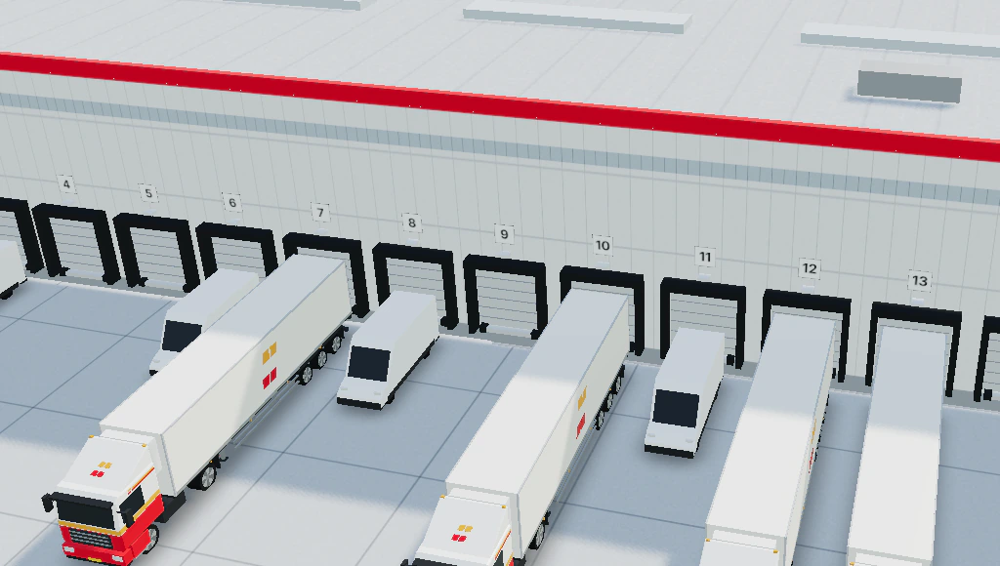
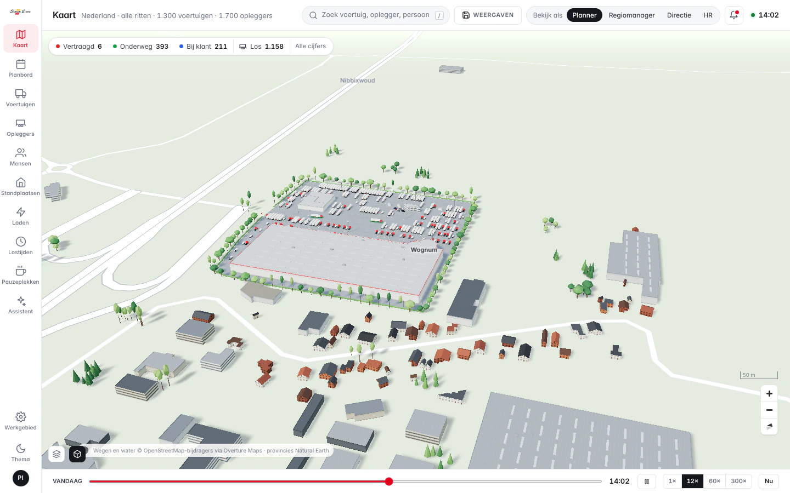
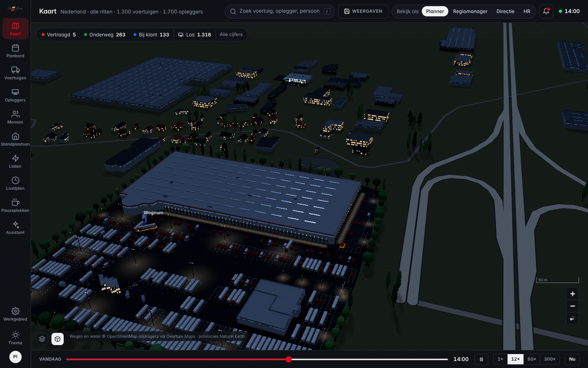
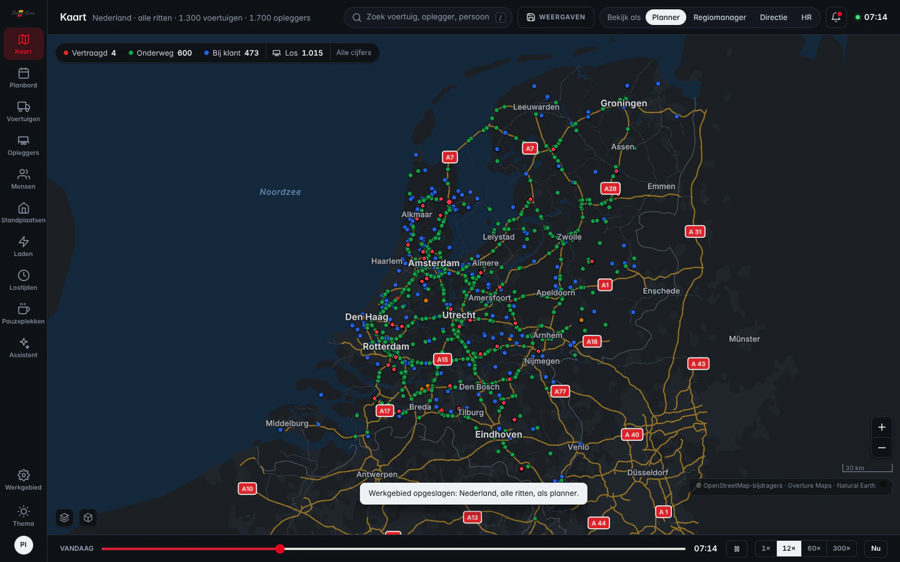
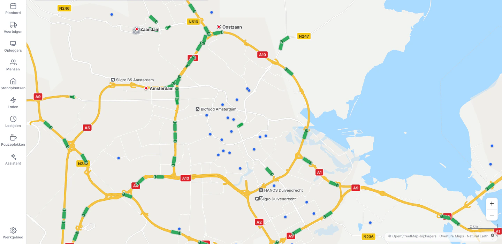
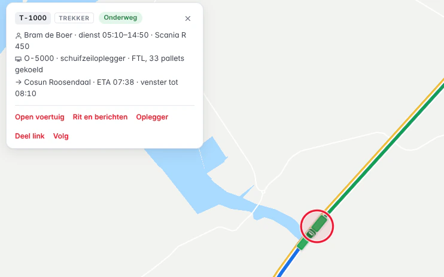
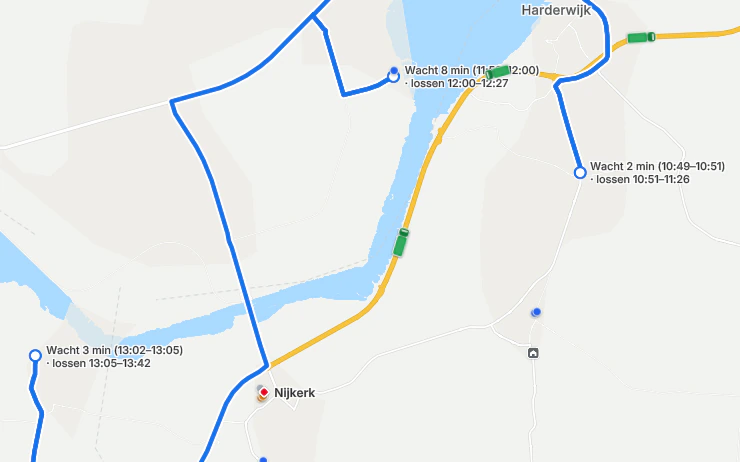
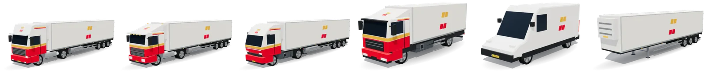
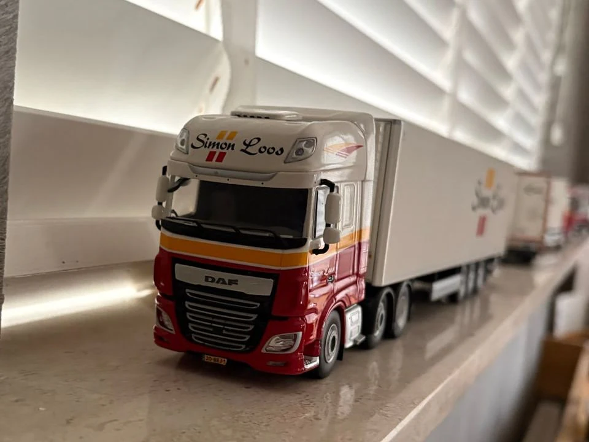

<title>Control Tower Voorstel</title>
<meta name="claude:viewport-fit-sides" content="cover">
<meta name="description" content="Voorstel van Sem Appel aan Simon Loos: van de demo naar het planningssysteem, met een proef op één standplaats, kosten en baten en het stap voor stap uitfaseren van de huidige applicaties.">
<link rel="preconnect" href="https://fonts.googleapis.com">
<link rel="preconnect" href="https://fonts.gstatic.com" crossorigin>
<link rel="stylesheet" href="https://fonts.googleapis.com/css2?family=Inter:wght@400;500;600;700&amp;display=swap">
<style>
/* Opzet: een gedrukt voorstel in de huisstijl van Simon Loos. Wit papier, één tekstkolom, beelden op kolombreedte;
   in print elk hoofdstuk een nieuwe A4. Rood en goudgeel alleen als beeldmerk, band en status, de tekst in donkere inkt. */
:root {
  --paper: #ffffff;
  --panel: #f5f5f3;
  --panel-2: #ebebe8;
  --ink: #17181b;
  --ink-2: #40434b;
  --ink-3: #676c75;
  --rule: #e2e2df;
  --rule-2: #c8c9c5;
  --red: #e3001f;
  --red-text: #c2001b;
  --red-wash: #fdebed;
  --gold-wash: #fdf3e0;
  --gold-text: #7a4c00;
  --ok: #1d7543;
  --ok-wash: #e5f2e9;
  --bar: #b4b7bd;
  --line-strong: #17181b;
  --stripe-a: #e6e6e3;
  --stripe-b: #cfd0cc;
  --device: #1c1d21;
  --heat-1: #fbeff0; --heat-2: #f6cdd2; --heat-3: #ee98a3; --heat-4: #dc4a5e; --heat-5: #a80f24;
  --heat-t-1: #17181b; --heat-t-2: #17181b; --heat-t-3: #17181b; --heat-t-4: #ffffff; --heat-t-5: #ffffff;
  --new-1: #f9d3d8; --new-2: #ef7f8d; --new-3: #e3001f;
  --new-t-1: #17181b; --new-t-2: #17181b; --new-t-3: #ffffff;
  --shadow: 0 1px 2px rgba(23, 24, 27, .05), 0 10px 28px rgba(23, 24, 27, .07);
  /* het beeldmerk en de band: altijd de echte kleuren van Simon Loos */
  --sl-red: #e3001f;
  --sl-gold: #f0a526;
  --font: "Inter", system-ui, -apple-system, "Segoe UI", Roboto, "Helvetica Neue", Arial, sans-serif;
  --fs-xs: .78rem;
  --fs-s: .875rem;
  --fs-b: 1.0625rem;
  --fs-lead: 1.25rem;
  --fs-h3: 1.0625rem;
  --fs-h2: clamp(1.6rem, 1.15rem + 1.5vw, 2.15rem);
  --fs-h1: clamp(2.15rem, 1.3rem + 3.4vw, 3.45rem);
  --fs-mock: .8125rem;
  --measure: 38em;
  --gap: 24px;
}
@media (prefers-color-scheme: dark) {
  :root:not([data-theme="light"]) {
    --paper: #121316; --panel: #1b1c20; --panel-2: #25272c; --ink: #ececea; --ink-2: #c4c6cb; --ink-3: #969aa3;
    --rule: #2b2d32; --rule-2: #3e4147; --red: #ff3f53; --red-text: #ff6e7c; --red-wash: #3b151b;
    --gold-wash: #382a10; --gold-text: #f4c46a; --ok: #62c78e; --ok-wash: #15291d; --bar: #5e626a;
    --line-strong: #ececea; --stripe-a: #23252a; --stripe-b: #3a3d43; --device: #3a3c42;
    --heat-1: #261b1d; --heat-2: #4b2129; --heat-3: #7a2735; --heat-4: #c33047; --heat-5: #ff6377;
    --heat-t-1: #ececea; --heat-t-2: #ececea; --heat-t-3: #ffffff; --heat-t-4: #ffffff; --heat-t-5: #1a0b0e;
    --new-1: #4b2129; --new-2: #9a2a3b; --new-3: #ff3f53; --new-t-1: #ececea; --new-t-2: #ffffff; --new-t-3: #1a0b0e;
    --shadow: none; color-scheme: dark;
  }
}
:root[data-theme="dark"] {
  --paper: #121316; --panel: #1b1c20; --panel-2: #25272c; --ink: #ececea; --ink-2: #c4c6cb; --ink-3: #969aa3;
  --rule: #2b2d32; --rule-2: #3e4147; --red: #ff3f53; --red-text: #ff6e7c; --red-wash: #3b151b;
  --gold-wash: #382a10; --gold-text: #f4c46a; --ok: #62c78e; --ok-wash: #15291d; --bar: #5e626a;
  --line-strong: #ececea; --stripe-a: #23252a; --stripe-b: #3a3d43; --device: #3a3c42;
  --heat-1: #261b1d; --heat-2: #4b2129; --heat-3: #7a2735; --heat-4: #c33047; --heat-5: #ff6377;
  --heat-t-1: #ececea; --heat-t-2: #ececea; --heat-t-3: #ffffff; --heat-t-4: #ffffff; --heat-t-5: #1a0b0e;
  --new-1: #4b2129; --new-2: #9a2a3b; --new-3: #ff3f53; --new-t-1: #ececea; --new-t-2: #ffffff; --new-t-3: #1a0b0e;
  --shadow: none; color-scheme: dark;
}

* { box-sizing: border-box; }
html { -webkit-text-size-adjust: 100%; }
body {
  margin: 0; background: var(--paper); color: var(--ink);
  font-family: var(--font); font-size: var(--fs-b); line-height: 1.6;
  font-feature-settings: "cv05" 1; -webkit-font-smoothing: antialiased; text-rendering: optimizeLegibility;
}
img { max-width: 100%; }
a { color: inherit; text-decoration-color: var(--rule-2); text-underline-offset: 3px; }
a:hover { text-decoration-color: var(--red); }
:focus-visible { outline: 2px solid var(--red); outline-offset: 3px; border-radius: 2px; }
p { margin: 0 0 1em; }
h1, h2, h3, h4 { font-weight: 600; text-wrap: balance; color: var(--ink); }
h3 { font-size: var(--fs-h3); line-height: 1.3; margin: 0 0 .5em; letter-spacing: -.005em; }
h4 { font-size: var(--fs-s); line-height: 1.35; margin: 0 0 .4em; }
ul, ol { margin: 0 0 1em; padding-left: 1.2em; }
li { margin-bottom: .35em; }
li::marker { color: var(--ink-3); }
b, strong { font-weight: 600; }
.wrap {
  max-width: 1096px; margin-inline: auto;
  padding-left: max(16px, env(safe-area-inset-left, 0px));
  padding-right: max(16px, env(safe-area-inset-right, 0px));
}
.prose > p, .prose > ul, .prose > ol, p.prose { max-width: var(--measure); }
.muted { color: var(--ink-3); }
.small { font-size: var(--fs-s); }
.tab { font-variant-numeric: tabular-nums; }
.nowrap { white-space: nowrap; }

/* beeldmerk: twee gele vierkantjes boven twee rode, licht schuin */
.mark { --m: 7px; display: inline-grid; grid-template-columns: repeat(2, var(--m)); gap: calc(var(--m) * .3); transform: skewX(-12deg); flex: none; }
.mark span { display: block; width: var(--m); height: var(--m); background: var(--sl-gold); }
.mark span:nth-child(n+3) { background: var(--sl-red); }
.band { height: 8px; background: linear-gradient(var(--sl-gold) 0 50%, var(--sl-red) 50% 100%); }
.band.thin { height: 6px; }

/* voorkant */
.cover { padding-block: 36px 0; }
.cover-top { display: flex; align-items: center; justify-content: space-between; gap: 12px 24px; flex-wrap: wrap; font-size: var(--fs-s); color: var(--ink-2); }
.brand { display: inline-flex; align-items: center; gap: 12px; font-weight: 600; color: var(--ink); letter-spacing: .01em; }
.brand .mark { --m: 9px; }
.cover h1 { font-size: var(--fs-h1); line-height: 1.07; letter-spacing: -.022em; margin: 64px 0 18px; max-width: 21ch; }
.cover-sub { font-size: var(--fs-lead); line-height: 1.45; color: var(--ink-2); max-width: 36em; margin: 0 0 26px; }
.cover-meta { display: flex; flex-wrap: wrap; gap: 6px 28px; font-size: var(--fs-s); color: var(--ink-2); margin-bottom: 36px; }
.cover-meta b { color: var(--ink); }
.cover-art { margin: 0; }
.cover-art img { display: block; width: 100%; height: auto; border-radius: 0 0 12px 12px; }
.cover-art figcaption { margin-top: 10px; }
.cover .band { border-radius: 2px 2px 0 0; }

/* hoofdstukken */
.ch { padding-block: 76px 12px; }
.ch + .ch, .kort + .ch { border-top: 1px solid var(--rule); }
.ch-head { display: flex; align-items: center; gap: 14px; margin-bottom: 18px; }
.ch-head .mark { --m: 6px; }
.ch-num { font-size: var(--fs-s); font-weight: 600; color: var(--ink-3); font-variant-numeric: tabular-nums; min-width: 1.4em; }
.ch h2 { font-size: var(--fs-h2); line-height: 1.14; letter-spacing: -.016em; margin: 0; }
.lead { font-size: var(--fs-lead); line-height: 1.45; font-weight: 500; max-width: 34em; margin: 0 0 26px; }
.sub { margin-top: 44px; }
.sub > h3 { font-size: calc(var(--fs-h3) * 1.08); margin-bottom: 14px; }

/* noten */
sup.fn { line-height: 0; font-size: .68em; font-weight: 600; margin-left: 1px; }
sup.fn a { color: var(--red-text); text-decoration: none; }
.notes { margin-top: 40px; padding-top: 12px; border-top: 1px solid var(--rule); font-size: var(--fs-xs); line-height: 1.5; color: var(--ink-3); max-width: 52em; }
.notes ol { list-style: none; padding: 0; margin: 0; display: grid; gap: 4px; }
.notes li { display: grid; grid-template-columns: 1.8em 1fr; margin: 0; }
.notes li > span:first-child { color: var(--red-text); font-weight: 600; }
.status { font-weight: 600; color: var(--ink-2); }

/* in het kort */
.kort-list { list-style: none; padding: 0; margin: 0; display: grid; gap: 0; max-width: 54em; }
.kort-list li { display: grid; grid-template-columns: 11em 1fr; gap: 6px 24px; padding: 16px 0; border-top: 1px solid var(--rule); margin: 0; }
.kort-list li:last-child { border-bottom: 1px solid var(--rule); }
.kort-list .k { font-weight: 600; color: var(--ink); }
.kort-list .v { color: var(--ink); }
.toc { margin-top: 46px; }
.toc h3 { margin-bottom: 10px; }
.toc ol { list-style: none; padding: 0; margin: 0; columns: 2; column-gap: 40px; max-width: 54em; }
.toc li { display: flex; gap: 12px; align-items: baseline; break-inside: avoid; margin: 0; padding: 5px 0; border-bottom: 1px solid var(--rule); }
.toc li .n { color: var(--ink-3); font-variant-numeric: tabular-nums; min-width: 1.6em; font-weight: 600; font-size: var(--fs-s); }
.toc li a { text-decoration: none; flex: 1; }
.toc li a:hover { color: var(--red-text); }
.toc .pg { display: none; font-variant-numeric: tabular-nums; color: var(--ink-3); font-size: var(--fs-s); }

/* rollen */
.roles { display: grid; grid-template-columns: repeat(2, minmax(0, 1fr)); gap: 30px 40px; }
.role { border-top: 2px solid var(--ink); padding-top: 14px; }
.role h3 { margin-bottom: 8px; }
.role p { margin-bottom: .7em; }
.typ { color: var(--ink-2); font-size: var(--fs-s); }
.typ q { quotes: "\201C" "\201D"; color: var(--ink); font-weight: 500; }
.typ small { color: var(--ink-3); font-size: 1em; white-space: nowrap; }
.closing { font-weight: 500; margin-top: 30px; max-width: 38em; }

/* tabellen */
.tablewrap { overflow-x: auto; margin: 22px 0; -webkit-overflow-scrolling: touch; }
table { border-collapse: collapse; width: 100%; font-size: var(--fs-s); line-height: 1.45; }
th, td { text-align: left; vertical-align: top; padding: 10px 12px; border-bottom: 1px solid var(--rule); }
th:first-child, td:first-child { padding-left: 0; }
th:last-child, td:last-child { padding-right: 0; }
thead th { font-size: var(--fs-xs); font-weight: 600; color: var(--ink-3); border-bottom: 1px solid var(--rule-2); letter-spacing: .01em; }
tbody th { font-weight: 600; }
tr.group th { padding-top: 22px; font-size: var(--fs-xs); color: var(--ink-3); font-weight: 600; letter-spacing: .02em; text-transform: uppercase; border-bottom: 1px solid var(--rule-2); }
.num { text-align: right; font-variant-numeric: tabular-nums; white-space: nowrap; }
.markt td:nth-child(2) { min-width: 15em; }
.markt td:nth-child(3) { min-width: 15em; }
.markt th[scope="row"] { min-width: 8.5em; }

/* chips */
.chip { display: inline-block; font-size: var(--fs-xs); font-weight: 600; line-height: 1.5; padding: 1px 8px; border-radius: 999px; border: 1px solid var(--rule-2); color: var(--ink-2); white-space: nowrap; margin-bottom: 4px; }
.chip.keep { background: var(--panel); border-color: var(--rule-2); color: var(--ink); }
.chip.link { background: var(--gold-wash); border-color: transparent; color: var(--gold-text); }
.chip.swap { background: var(--red-wash); border-color: transparent; color: var(--red-text); }
.chip.use { background: var(--ink); border-color: var(--ink); color: var(--paper); }
.chip.insp { color: var(--ink-3); }
.chip.build { background: var(--red-wash); border-color: transparent; color: var(--red-text); }

/* lijsten met lessen en punten */
.lessons { list-style: none; padding: 0; margin: 8px 0 0; display: grid; grid-template-columns: repeat(2, minmax(0, 1fr)); gap: 20px 40px; counter-reset: les; }
.lessons li { margin: 0; padding-left: 2.1em; position: relative; counter-increment: les; }
.lessons li::before { content: counter(les); position: absolute; left: 0; top: .05em; font-weight: 600; font-size: var(--fs-s); color: var(--red-text); font-variant-numeric: tabular-nums; }
.lessons b { display: block; }

/* echt en gesimuleerd */
.realsim { display: grid; grid-template-columns: repeat(2, minmax(0, 1fr)); gap: 0 40px; margin: 8px 0 8px; }
.realsim > div { border-top: 2px solid var(--ink); padding-top: 12px; }
.realsim > div.sim { border-top-color: var(--rule-2); }
.realsim ul { padding-left: 1.1em; margin: 0; font-size: var(--fs-s); }
.realsim h3 { margin-bottom: 8px; }

/* beelden */
figure { margin: 30px 0; }
figure img { display: block; width: 100%; height: auto; border-radius: 8px; border: 1px solid var(--rule); background: var(--panel); }
figcaption { font-size: var(--fs-s); line-height: 1.5; color: var(--ink-2); margin-top: 10px; max-width: 48em; }
figcaption b { color: var(--ink); }
.fig-2 { display: grid; grid-template-columns: repeat(2, minmax(0, 1fr)); gap: 24px; margin: 30px 0; }
.fig-2 figure { margin: 0; }
.fig-strip img { border: 0; background: transparent; border-radius: 0; }
.with-photo { display: grid; grid-template-columns: minmax(0, 1fr) minmax(0, 15rem); gap: 24px 36px; align-items: start; }
.with-photo figure { margin: 0; }

/* kaarten per laag */
.layers { display: grid; grid-template-columns: repeat(2, minmax(0, 1fr)); gap: 18px; }
.layer { border: 1px solid var(--rule); border-radius: 10px; padding: 18px 20px 12px; background: var(--paper); }
.layer.now { border-color: var(--rule-2); background: var(--panel); }
.layer-k { display: flex; align-items: baseline; justify-content: space-between; gap: 12px; margin-bottom: 10px; }
.layer-k h3 { margin: 0; }
.layer-k span { font-size: var(--fs-xs); color: var(--ink-3); font-weight: 600; white-space: nowrap; }
.layer ul { padding-left: 1.05em; font-size: var(--fs-s); margin: 0 0 6px; }
.layer li { margin-bottom: .3em; }
.buildsplit { display: grid; grid-template-columns: repeat(2, minmax(0, 1fr)); gap: 0 40px; }
.buildsplit > div { border-top: 2px solid var(--ink); padding-top: 12px; }
.buildsplit > div + div { border-top-color: var(--rule-2); }
.buildsplit ul { font-size: var(--fs-s); padding-left: 1.05em; margin: 0; }

/* ideeen */
.idea { padding-top: 26px; margin-top: 30px; border-top: 1px solid var(--rule); }
.idea:first-of-type { margin-top: 8px; }
.idea-head { display: flex; align-items: baseline; gap: 12px; flex-wrap: wrap; margin-bottom: 12px; }
.idea-head h3 { margin: 0; font-size: calc(var(--fs-h3) * 1.12); }
.idea-n { font-size: var(--fs-s); color: var(--ink-3); font-weight: 600; font-variant-numeric: tabular-nums; }
.facts { display: grid; grid-template-columns: repeat(2, minmax(0, 1fr)); gap: 10px 32px; margin: 0 0 18px; font-size: var(--fs-s); }
.facts div { min-width: 0; }
.facts dt { font-size: var(--fs-xs); font-weight: 600; color: var(--ink-3); margin-bottom: 1px; }
.facts dd { margin: 0; }
.idea-side { display: grid; grid-template-columns: minmax(0, 1fr) auto; gap: 24px 36px; align-items: start; }
.idea-side .facts { grid-template-columns: 1fr; }
.more-ideas { display: grid; grid-template-columns: repeat(2, minmax(0, 1fr)); gap: 0 36px; }
.mi { border-top: 1px solid var(--rule); padding: 14px 0 10px; font-size: var(--fs-s); break-inside: avoid; }
.mi h4 { font-size: var(--fs-b); margin-bottom: 6px; }
.mi dl { margin: 0; display: grid; grid-template-columns: 6.6em 1fr; gap: 3px 10px; }
.mi dt { color: var(--ink-3); font-weight: 600; font-size: var(--fs-xs); padding-top: .15em; }
.mi dd { margin: 0; }
.later { font-size: var(--fs-s); color: var(--ink-2); margin-top: 18px; max-width: 52em; }

/* mockups */
.mock { border: 1px solid var(--rule-2); border-radius: 12px; background: var(--paper); overflow: hidden; font-size: var(--fs-mock); line-height: 1.45; box-shadow: var(--shadow); }
.mock-bar { display: flex; align-items: center; justify-content: space-between; gap: 12px; padding: 9px 14px; background: var(--panel); border-bottom: 1px solid var(--rule); }
.mock-title { font-weight: 600; min-width: 0; }
.mock-title small { font-weight: 400; color: var(--ink-3); font-size: 1em; }
.mock-tag { flex: none; font-size: .74em; letter-spacing: .09em; text-transform: uppercase; color: var(--ink-3); border: 1px solid var(--rule-2); border-radius: 4px; padding: 0 6px; line-height: 1.7; }
.mock-body { padding: 14px; }
.mock-foot { padding: 8px 14px; border-top: 1px solid var(--rule); color: var(--ink-3); background: var(--panel); font-size: .92em; }
.btn { display: inline-flex; align-items: center; justify-content: center; padding: 3px 10px; border-radius: 6px; border: 1px solid var(--rule-2); font-weight: 600; font-size: .92em; white-space: nowrap; background: var(--paper); color: var(--ink); }
.btn.pri { background: var(--ink); color: var(--paper); border-color: var(--ink); }
.btn.red { background: var(--red); color: #fff; border-color: var(--red); }
.st { display: inline-flex; align-items: center; gap: 6px; font-weight: 600; white-space: nowrap; }
.st::before { content: ""; width: 8px; height: 8px; border-radius: 2px; background: currentColor; flex: none; }
.st.bad { color: var(--red-text); } .st.warn { color: var(--gold-text); } .st.ok { color: var(--ok); } .st.act { color: var(--ink); }
.kans { display: inline-block; font-weight: 600; font-variant-numeric: tabular-nums; padding: 0 7px; border-radius: 999px; white-space: nowrap; line-height: 1.6; }
.kans.hi { background: var(--ok-wash); color: var(--ok); } .kans.mid { background: var(--gold-wash); color: var(--gold-text); } .kans.lo { background: var(--red-wash); color: var(--red-text); }

/* a: ochtendbriefing */
.brief { display: grid; gap: 0; }
.brief-row { display: grid; grid-template-columns: 7.2em 2.2em minmax(0, 1fr) auto; gap: 4px 12px; align-items: baseline; padding: 10px 0; border-bottom: 1px solid var(--rule); }
.brief-row:last-child { border-bottom: 0; }
.brief-n { font-size: 1.5em; font-weight: 600; font-variant-numeric: tabular-nums; line-height: 1; }
.brief-t b { display: block; }
.brief-t span { color: var(--ink-2); }
.brief-head { display: flex; justify-content: space-between; gap: 12px; flex-wrap: wrap; color: var(--ink-2); padding-bottom: 8px; border-bottom: 1px solid var(--rule-2); }

/* b: open ritten */
.or { display: grid; grid-template-columns: minmax(0, 5fr) minmax(0, 6fr); }
.or-list { border-right: 1px solid var(--rule); }
.or-list ol { list-style: none; margin: 0; padding: 0; }
.or-i { display: grid; grid-template-columns: 5.6em minmax(0, 1fr); gap: 2px 10px; padding: 10px 14px; border-bottom: 1px solid var(--rule); margin: 0; }
.or-i.on { background: var(--panel); box-shadow: inset 3px 0 0 var(--red); }
.or-u { font-weight: 600; font-variant-numeric: tabular-nums; white-space: nowrap; }
.or-u.bad { color: var(--red-text); } .or-u.warn { color: var(--gold-text); } .or-u.calm { color: var(--ink-2); }
.or-t b { display: block; }
.or-t span { color: var(--ink-3); }
.or-c { grid-column: 2; display: flex; gap: 8px; flex-wrap: wrap; align-items: center; }
.or-r { color: var(--ink-2); }
.or-d { padding: 14px; }
.or-d h4 { font-size: 1.08em; margin: 0 0 2px; }
.or-meta { color: var(--ink-3); margin-bottom: 10px; }
.prog { background: var(--panel); border-radius: 8px; padding: 9px 11px; margin-bottom: 12px; }
.prog b { font-variant-numeric: tabular-nums; }
.kgroup { margin-bottom: 10px; }
.kgroup h5 { font-size: .86em; color: var(--ink-3); margin: 0 0 4px; font-weight: 600; letter-spacing: .02em; text-transform: uppercase; }
.kand { display: grid; grid-template-columns: minmax(0, 1fr) auto; gap: 2px 10px; align-items: center; padding: 6px 0; border-top: 1px solid var(--rule); }
.kand b { font-weight: 600; }
.kand span.w { color: var(--ink-2); }
.cost { display: flex; flex-wrap: wrap; gap: 4px 14px; padding-top: 8px; border-top: 1px solid var(--rule-2); color: var(--ink-2); }
.cost b { color: var(--ink); font-variant-numeric: tabular-nums; }

/* c: capaciteitsradar */
.cap-svg { display: block; width: 100%; height: auto; font-family: var(--font); }
.cap-svg .grid { stroke: var(--rule); stroke-width: 1; }
.cap-svg .tick { fill: var(--ink-3); font-size: 11px; font-variant-numeric: tabular-nums; }
.cap-svg .axis { fill: var(--ink-3); font-size: 11px; }
.cap-svg .lbl { fill: var(--ink); font-size: 11.5px; font-weight: 600; font-variant-numeric: tabular-nums; }
.cap-svg .bar-in { fill: var(--bar); }
.cap-svg .bar-tekort { fill: var(--red); }
.cap-svg .cap-line { fill: none; stroke: var(--line-strong); stroke-width: 2; stroke-linejoin: round; stroke-linecap: round; }
.legend { display: flex; flex-wrap: wrap; gap: 6px 18px; color: var(--ink-2); margin: 4px 0 10px; }
.legend span { display: inline-flex; align-items: center; gap: 7px; }
.sw { display: inline-block; width: 12px; height: 12px; border-radius: 3px; }
.sw.bar { background: var(--bar); } .sw.tek { background: var(--red); }
.sw.line { height: 2px; width: 16px; border-radius: 1px; background: var(--line-strong); }
.insight { border-left: 3px solid var(--red); padding: 2px 0 2px 10px; margin-top: 10px; }

/* d: wachttijdradar */
.heat { border-collapse: separate; border-spacing: 2px; width: 100%; font-size: 1em; }
.heat th, .heat td { border: 0; padding: 0; }
.heat thead th { font-weight: 600; color: var(--ink-3); text-align: center; font-size: .9em; padding-bottom: 3px; font-variant-numeric: tabular-nums; }
.heat tbody th { text-align: left; font-weight: 600; padding-right: 10px; white-space: nowrap; font-size: .95em; }
.heat td { text-align: center; height: 2.1em; min-width: 2.4em; border-radius: 3px; font-variant-numeric: tabular-nums; font-weight: 500; }
.h1 { background: var(--heat-1); color: var(--heat-t-1); } .h2 { background: var(--heat-2); color: var(--heat-t-2); }
.h3 { background: var(--heat-3); color: var(--heat-t-3); } .h4 { background: var(--heat-4); color: var(--heat-t-4); }
.h5 { background: var(--heat-5); color: var(--heat-t-5); }
.heat-legend { display: flex; flex-wrap: wrap; align-items: center; gap: 4px 6px; color: var(--ink-2); margin-top: 10px; }
.heat-legend i { display: inline-block; width: 2.6em; height: 1.1em; border-radius: 3px; font-style: normal; }
.heat-legend span { margin-right: 10px; }
.heatwrap { overflow-x: auto; }
.heatwrap table { min-width: 30em; }

/* e: voorkeursbod op een telefoon */
.phone { width: 290px; max-width: 100%; border: 10px solid var(--device); border-radius: 36px; background: var(--paper); padding: 16px 14px 18px; font-size: var(--fs-mock); line-height: 1.45; box-shadow: var(--shadow); position: relative; }
.phone::before { content: ""; display: block; width: 64px; height: 5px; border-radius: 3px; background: var(--panel-2); margin: -4px auto 12px; }
.ph-top { display: flex; justify-content: space-between; align-items: baseline; gap: 8px; margin-bottom: 10px; }
.ph-top b { font-size: 1.12em; }
.ph-top span { color: var(--ink-3); }
.pref { list-style: none; margin: 0 0 10px; padding: 0; counter-reset: pref; }
.pref li { display: grid; grid-template-columns: 1.7em 1fr; gap: 6px; align-items: center; padding: 7px 9px; border: 1px solid var(--rule); border-radius: 8px; margin-bottom: 6px; counter-increment: pref; }
.pref li::before { content: counter(pref); display: grid; place-items: center; width: 1.5em; height: 1.5em; border-radius: 50%; background: var(--ink); color: var(--paper); font-weight: 600; font-size: .85em; }
.ph-note { color: var(--ink-3); font-size: .92em; margin-bottom: 10px; }
.shift { background: var(--panel); border-radius: 10px; padding: 10px 11px; margin-bottom: 10px; }
.shift b { display: block; }
.why { border-top: 1px solid var(--rule); padding-top: 8px; }
.why h5 { margin: 0 0 4px; font-size: 1em; }
.why ul { margin: 0; padding-left: 1.05em; }
.why li { margin-bottom: 3px; }
.ph-btns { display: flex; gap: 8px; margin-top: 10px; }
.ph-btns .btn { flex: 1; padding: 6px 8px; }

/* f: wat kost deze keuze */
.keuze-q { display: flex; justify-content: space-between; flex-wrap: wrap; gap: 4px 12px; margin-bottom: 10px; }
.keuze { width: 100%; border-collapse: collapse; font-size: 1em; }
.keuze th, .keuze td { padding: 8px 10px; border-bottom: 1px solid var(--rule); vertical-align: middle; }
.keuze th:first-child, .keuze td:first-child { padding-left: 4px; }
.keuze thead th { font-size: .88em; color: var(--ink-3); font-weight: 600; }
.keuze tr.pick td { background: var(--ok-wash); }
.keuze tr.pick td:first-child { box-shadow: inset 3px 0 0 var(--ok); }
.keuze .eur { font-weight: 600; text-align: right; white-space: nowrap; font-variant-numeric: tabular-nums; }
.keuze .eff { color: var(--ink-2); }
.keuze-sum { display: flex; flex-wrap: wrap; gap: 4px 18px; padding-top: 10px; color: var(--ink-2); }
.keuze-sum b { color: var(--ink); font-variant-numeric: tabular-nums; }

/* opbrengst */
.calc td, .calc th { padding-top: 12px; padding-bottom: 12px; }
.calc .post { min-width: 11em; }
.calc .how { color: var(--ink-2); min-width: 15em; }
.calc .sc { min-width: 9.5em; }
.calc .sc b { display: block; font-size: 1.08em; font-variant-numeric: tabular-nums; }
.calc .sc span { color: var(--ink-3); font-size: var(--fs-xs); display: block; font-variant-numeric: tabular-nums; }
.calc tfoot td, .calc tfoot th { border-bottom: 2px solid var(--ink); border-top: 2px solid var(--ink); font-weight: 600; }
.calc tfoot .sc b { font-size: 1.15em; }
.calc thead .sc { text-align: left; }
.assume { counter-reset: a; list-style: none; padding: 0; margin: 0; display: grid; grid-template-columns: repeat(2, minmax(0, 1fr)); gap: 8px 36px; font-size: var(--fs-s); }
.assume li { counter-increment: a; display: grid; grid-template-columns: 2.4em 1fr; margin: 0; }
.assume li::before { content: "A" counter(a); font-weight: 600; color: var(--ink-3); font-variant-numeric: tabular-nums; }
.twocol { display: grid; grid-template-columns: repeat(2, minmax(0, 1fr)); gap: 0 40px; }
.twocol > div { min-width: 0; }
.twocol ul { font-size: var(--fs-s); padding-left: 1.05em; }

/* nodig */
.need { display: grid; grid-template-columns: repeat(2, minmax(0, 1fr)); gap: 22px 36px; }
.need > div { border-top: 2px solid var(--ink); padding-top: 12px; min-width: 0; }
.need > div.tech { border-top-color: var(--rule-2); }
.need h3 { display: flex; justify-content: space-between; align-items: baseline; gap: 10px; }
.need h3 small { font-size: var(--fs-xs); color: var(--ink-3); font-weight: 600; }
.check { list-style: none; padding: 0; margin: 0; font-size: var(--fs-s); }
.check li { display: grid; grid-template-columns: 1.5em 1fr; gap: 4px; margin-bottom: .45em; }
.check li::before { content: ""; width: .95em; height: .95em; border: 1.5px solid var(--ink-2); border-radius: 2px; margin-top: .22em; }
.check.dot li::before { border: 0; background: var(--rule-2); width: .5em; height: .5em; border-radius: 50%; margin: .5em 0 0 .2em; }
.steps-short td:first-child { width: 2.2em; font-weight: 600; color: var(--ink-3); font-variant-numeric: tabular-nums; }
.steps-short td.d { white-space: nowrap; color: var(--ink-2); font-variant-numeric: tabular-nums; }
.steps-short td.u { color: var(--ink); }
.steps-short td.u.none { color: var(--ink-3); }

/* uitfaseren */
.lane { width: 100%; border-collapse: separate; border-spacing: 3px; font-size: var(--fs-xs); min-width: 640px; }
.lane th, .lane td { border: 0; padding: 0; }
.lane thead th { font-weight: 600; color: var(--ink-3); text-align: center; padding-bottom: 4px; font-variant-numeric: tabular-nums; }
.lane thead th:first-child { text-align: left; }
.lane tbody th { text-align: left; font-weight: 600; font-size: var(--fs-s); padding-right: 12px; white-space: nowrap; color: var(--ink); }
.lane tbody th small { display: block; font-weight: 400; color: var(--ink-3); font-size: var(--fs-xs); }
.lane td { height: 2.5em; border-radius: 3px; text-align: center; padding: 2px 4px; line-height: 1.2; width: 12%; }
.lane .on { background: var(--panel-2); color: var(--ink-2); }
.lane .side { background: repeating-linear-gradient(135deg, var(--stripe-a) 0 5px, var(--stripe-b) 5px 7px); color: var(--ink); }
.lane .off { background: transparent; color: var(--ink-3); box-shadow: inset 0 0 0 1px var(--rule); }
.lane .n1 { background: var(--new-1); color: var(--new-t-1); } .lane .n2 { background: var(--new-2); color: var(--new-t-2); } .lane .n3 { background: var(--new-3); color: var(--new-t-3); }
.lane tr.keep td { background: var(--panel-2); }
.lane-legend { display: flex; flex-wrap: wrap; gap: 6px 18px; font-size: var(--fs-xs); color: var(--ink-2); margin-top: 10px; }
.lane-legend span { display: inline-flex; align-items: center; gap: 7px; }
.lane-legend i { display: inline-block; width: 22px; height: 12px; border-radius: 3px; }
.lane-legend i.on { background: var(--panel-2); } .lane-legend i.side { background: repeating-linear-gradient(135deg, var(--stripe-a) 0 4px, var(--stripe-b) 4px 6px); }
.lane-legend i.off { box-shadow: inset 0 0 0 1px var(--rule-2); } .lane-legend i.n3 { background: linear-gradient(90deg, var(--new-1), var(--new-3)); }
.tl { list-style: none; margin: 8px 0 0; padding: 0; position: relative; }
.tl-step { display: grid; grid-template-columns: 3.2em minmax(0, 1fr); gap: 0 14px; position: relative; padding-bottom: 18px; margin: 0; }
.tl-step::before { content: ""; position: absolute; left: 1.15em; top: 2.2em; bottom: 0; width: 2px; background: var(--rule); }
.tl-step:last-child::before { display: none; }
.tl-n { width: 2.3em; height: 2.3em; border-radius: 50%; display: grid; place-items: center; font-weight: 600; background: var(--panel-2); color: var(--ink); font-variant-numeric: tabular-nums; position: relative; z-index: 1; }
.tl-step.first .tl-n { background: var(--red); color: #fff; }
.tl-h { display: flex; flex-wrap: wrap; align-items: baseline; gap: 4px 14px; margin-bottom: 4px; }
.tl-h h3 { margin: 0; }
.tl-h span { font-size: var(--fs-xs); color: var(--ink-3); font-weight: 600; }
.tl-b { font-size: var(--fs-s); }
.tl-b p { margin-bottom: .4em; }
.tl-kv { display: grid; grid-template-columns: repeat(3, minmax(0, 1fr)); gap: 4px 20px; margin-top: 4px; }
.tl-kv dt { font-size: var(--fs-xs); color: var(--ink-3); font-weight: 600; }
.tl-kv dd { margin: 0; }
.tl-kv .out dd { font-weight: 600; }
.box { border: 1.5px solid var(--ink); border-radius: 10px; padding: 18px 20px 8px; margin-top: 26px; }
.box h3 { display: flex; align-items: center; gap: 10px; }
.box h3 .mark { --m: 5px; }
.box ul { font-size: var(--fs-s); padding-left: 1.1em; }
.box .stress { font-weight: 600; }
.cond { font-size: var(--fs-s); }

/* vragen */
.ask { list-style: none; padding: 0; margin: 0; display: grid; gap: 0; max-width: 52em; counter-reset: ask; }
.ask li { display: grid; grid-template-columns: 2.6em 1fr; gap: 0 14px; padding: 16px 0; border-top: 1px solid var(--rule); margin: 0; counter-increment: ask; }
.ask li:last-child { border-bottom: 1px solid var(--rule); }
.ask li::before { content: counter(ask); width: 2em; height: 2em; border-radius: 50%; display: grid; place-items: center; background: var(--red); color: #fff; font-weight: 600; font-variant-numeric: tabular-nums; }
.ask b { display: block; font-size: 1.04em; }
.deliver { margin-top: 34px; }
.final { margin-top: 30px; font-weight: 500; max-width: 38em; }
.sign { margin-top: 26px; color: var(--ink-2); font-size: var(--fs-s); }

/* bijlage */
.qs { counter-reset: q; list-style: none; padding: 0; margin: 0; columns: 2; column-gap: 40px; font-size: var(--fs-s); }
.qs li { counter-increment: q; display: grid; grid-template-columns: 2em 1fr; break-inside: avoid; margin: 0 0 12px; }
.qs li::before { content: counter(q); font-weight: 600; color: var(--red-text); font-variant-numeric: tabular-nums; }
.qs b { font-weight: 600; }

.endline { margin-top: 56px; padding-block: 18px 40px; border-top: 1px solid var(--rule); font-size: var(--fs-xs); color: var(--ink-3); display: flex; justify-content: space-between; flex-wrap: wrap; gap: 8px 20px; }

/* telefoonbreedte */
@media screen and (max-width: 860px) {
  .or { grid-template-columns: 1fr; }
  .or-list { border-right: 0; border-bottom: 1px solid var(--rule); }
  .idea-side { grid-template-columns: 1fr; }
  .idea-side .phone { margin-inline: auto; }
}
@media screen and (max-width: 720px) {
  :root { --fs-b: 1rem; --fs-lead: 1.125rem; }
  .ch { padding-block: 56px 8px; }
  .roles, .lessons, .realsim, .layers, .buildsplit, .facts, .more-ideas, .assume, .twocol, .need, .fig-2, .with-photo { grid-template-columns: 1fr; }
  .realsim > div + div, .buildsplit > div + div, .twocol > div + div { margin-top: 22px; }
  .kort-list li { grid-template-columns: 1fr; gap: 2px; }
  .toc ol, .qs { columns: 1; }
  .brief-row { grid-template-columns: 6.4em 2em minmax(0, 1fr); }
  .brief-row .brief-a { grid-column: 3; justify-self: start; }
  .tl-kv { grid-template-columns: 1fr; }
  .cover h1 { margin-top: 44px; }
  .with-photo figure { max-width: 20rem; }
}

/* ---------- print: A4, alles licht ---------- */
@page {
  size: A4;
  margin: 16mm 23mm 19mm 23mm;
  @bottom-left { content: "Control Tower Simon Loos  ·  Voorstel van Sem Appel  ·  25 oktober 2026"; font-family: "Inter", sans-serif; font-size: 7pt; color: #676c75; vertical-align: top; padding-top: 6mm; }
  @bottom-right { content: counter(page) " / " counter(pages); font-family: "Inter", sans-serif; font-size: 7pt; font-weight: 600; color: #676c75; vertical-align: top; padding-top: 6mm; }
}
@page :first {
  margin: 0;
  @bottom-left { content: none; }
  @bottom-right { content: none; }
}
@media print {
  html:root:not([data-print-x]) {
    --paper: #ffffff; --panel: #f5f5f3; --panel-2: #ebebe8; --ink: #17181b; --ink-2: #40434b; --ink-3: #676c75;
    --rule: #e2e2df; --rule-2: #c8c9c5; --red: #e3001f; --red-text: #c2001b; --red-wash: #fdebed;
    --gold-wash: #fdf3e0; --gold-text: #7a4c00; --ok: #1d7543; --ok-wash: #e5f2e9; --bar: #b4b7bd;
    --line-strong: #17181b; --stripe-a: #e6e6e3; --stripe-b: #cfd0cc; --device: #1c1d21;
    --heat-1: #fbeff0; --heat-2: #f6cdd2; --heat-3: #ee98a3; --heat-4: #dc4a5e; --heat-5: #a80f24;
    --heat-t-1: #17181b; --heat-t-2: #17181b; --heat-t-3: #17181b; --heat-t-4: #ffffff; --heat-t-5: #ffffff;
    --new-1: #f9d3d8; --new-2: #ef7f8d; --new-3: #e3001f; --new-t-1: #17181b; --new-t-2: #17181b; --new-t-3: #ffffff;
    --shadow: none; color-scheme: light;
    --fs-xs: 7.3pt; --fs-s: 8.3pt; --fs-b: 9.6pt; --fs-lead: 11.3pt; --fs-h3: 10.4pt; --fs-h2: 19pt; --fs-h1: 31pt; --fs-mock: 7.1pt;
    --measure: none;
  }
  html, body { background: #ffffff; }
  body { line-height: 1.46; -webkit-print-color-adjust: exact; print-color-adjust: exact; orphans: 3; widows: 3; }
  .wrap { max-width: none; padding: 0; }
  a { text-decoration: none; }
  sup.fn a { color: var(--red-text); }
  .ch { break-before: page; padding: 0; border: 0 !important; }
  .ch-head { margin-bottom: 4mm; }
  .lead { margin-bottom: 5mm; max-width: none; }
  .sub { margin-top: 7mm; }
  .sub > h3 { margin-bottom: 2.5mm; }
  h2, h3, h4, .ch-head, .idea-head, .tl-h { break-after: avoid; }
  figure, .fig-2, .mock, .phone, .idea, .layer, .role, .mi, .tl-step, .box, .need > div, tr, .lessons li, .realsim > div, .kort-list li, .heat, .lane { break-inside: avoid; }
  .notes { margin-top: 7mm; break-inside: avoid; }
  .tablewrap { overflow: visible; margin: 4mm 0; }
  thead { display: table-header-group; }
  figure { margin: 5mm 0; }
  figure img { border-radius: 4px; }
  figcaption { margin-top: 2mm; max-width: none; }
  .fig-2 { gap: 6mm; margin: 5mm 0; }
  .mock { box-shadow: none; border-radius: 8px; }
  .phone { box-shadow: none; border-width: 7px; border-radius: 26px; width: 62mm; }
  .idea { margin-top: 6mm; padding-top: 4mm; }
  .facts { margin-bottom: 4mm; gap: 2mm 8mm; }
  .roles { gap: 6mm 9mm; }
  .lessons { gap: 3.5mm 9mm; }
  .layers { gap: 4mm; }
  .layer { padding: 4mm 4.5mm 2mm; }
  .buildsplit, .twocol, .realsim { gap: 0 9mm; }
  .need { gap: 5mm 9mm; }
  .more-ideas { gap: 0 9mm; }
  .with-photo { grid-template-columns: minmax(0, 1fr) 52mm; gap: 6mm; }
  .tl-step { padding-bottom: 3.5mm; }
  .box { margin-top: 6mm; padding: 4mm 5mm 1mm; }
  .closing, .final { margin-top: 6mm; }
  .deliver { margin-top: 7mm; }
  .toc { margin-top: 10mm; }
  .toc .pg { display: inline; }
  .kort-list li { padding: 3.2mm 0; grid-template-columns: 36mm 1fr; }
  .ask li { padding: 3.2mm 0; }
  .endline { display: none; }
  .heatwrap { overflow: visible; }
  .heatwrap table, .lane { min-width: 0; }

  /* de voorkant als eigen A4 zonder marge */
  .cover { height: 297mm; padding: 0; display: flex; flex-direction: column; overflow: hidden; }
  .cover > .wrap { padding: 20mm 23mm 0; flex: 1; display: flex; flex-direction: column; }
  .cover h1 { margin: 34mm 0 6mm; max-width: 150mm; }
  .cover-sub { max-width: 140mm; margin-bottom: 7mm; }
  .cover-meta { margin-bottom: 0; }
  .cover-art { margin-top: auto; }
  .cover-art figcaption { padding: 0 0 5mm; font-size: 7.3pt; color: var(--ink-3); max-width: 150mm; }
  .cover .band { height: 4.2mm; border-radius: 0; margin: 0 -23mm; }
  .cover-art img { border-radius: 0; width: 210mm; max-width: none; margin: 0 -23mm; height: 119mm; object-fit: cover; object-position: 50% 60%; }
}
</style>
<style>
.cover-art { display: flex; flex-direction: column; }
.cover-art .band { order: 1; }
.cover-art img { order: 2; }
.cover-art figcaption { order: 3; }
@media print { .cover-art figcaption { order: 0; } }
</style>
<style>
.h3-next { margin-top: 22px; }
.idea-grid { display: block; }
@media screen and (min-width: 1000px) {
  .idea.split .idea-grid { display: grid; grid-template-columns: minmax(0, 15.5rem) minmax(0, 1fr); gap: 36px; align-items: start; }
  .idea.split .facts { grid-template-columns: 1fr; gap: 14px; margin: 0; }
  .idea.wide .facts { grid-template-columns: repeat(4, minmax(0, 1fr)); }
}
@media print {
  .idea.split .idea-grid { display: grid; grid-template-columns: 44mm minmax(0, 1fr); gap: 6mm; align-items: start; }
  .idea.split .facts { grid-template-columns: 1fr; gap: 2.4mm; margin: 0; }
  .idea.wide .facts { grid-template-columns: repeat(4, minmax(0, 1fr)); gap: 2mm 5mm; }
  .mock-bar { padding: 1.6mm 3mm; }
  .mock-body { padding: 2.6mm 3mm; }
  .mock-foot { padding: 1.4mm 3mm; }
  .brief-row { padding: 1.6mm 0; }
  .or-i { padding: 1.6mm 3mm; }
  .or-d { padding: 2.6mm 3mm; }
  .prog { padding: 1.6mm 2.2mm; margin-bottom: 2mm; }
  .kgroup { margin-bottom: 1.6mm; }
  .kand { padding: 1mm 0; }
  .heat td { height: 1.85em; }
  .idea { margin-top: 5mm; padding-top: 3.5mm; }
  .roles { gap: 4.5mm 9mm; }
  .role { padding-top: 2.6mm; }
  .role p { margin-bottom: .45em; }
  .notes { margin-top: 5mm; padding-top: 2mm; }
  .need { gap: 4mm 9mm; }
  .check li { margin-bottom: .3em; }
  .h3-next { margin-top: 4mm; }
}
</style>
<style>
/* meer ideeen: kaarten op een telefoon, een tabel met vier kolommen op brede schermen en in print */
.mi-list { display: grid; }
.mi-head { display: none; }
.mi { position: relative; }
.mi h4 small { display: block; font-weight: 400; color: var(--ink-3); font-size: var(--fs-xs); margin-top: 3px; line-height: 1.4; }
@media screen and (min-width: 900px), print {
  .mi-head { display: grid; grid-template-columns: 1.3fr 1fr 1fr 1fr; gap: 0 20px; font-size: var(--fs-xs); font-weight: 600; color: var(--ink-3); padding-bottom: 6px; border-bottom: 1px solid var(--rule-2); }
  .mi { display: grid; grid-template-columns: 1.3fr 1fr 1fr 1fr; gap: 0 20px; padding: 11px 0; }
  .mi:first-of-type { border-top: 0; }
  .mi dl { display: contents; }
  .mi dt { position: absolute; width: 1px; height: 1px; overflow: hidden; clip: rect(0 0 0 0); white-space: nowrap; }
  .mi dd { margin: 0; color: var(--ink-2); }
  .mi h4 { font-size: var(--fs-s); margin: 0; }
}
@media print {
  .mi { padding: 2mm 0; gap: 0 4mm; }
  .mi-head { gap: 0 4mm; padding-bottom: 1.2mm; }
  .later { margin-top: 3mm; }
  th, td { padding: 1.7mm 2.4mm; }
  .calc td, .calc th { padding-top: 2mm; padding-bottom: 2mm; }
  .steps-short td, .steps-short th { padding-top: 1.3mm; padding-bottom: 1.3mm; }
  #nodig .need { grid-template-columns: repeat(3, minmax(0, 1fr)); grid-template-rows: auto 1fr; gap: 4mm 6mm; }
  #nodig .need > div:nth-child(1) { grid-column: 1; grid-row: 1 / span 2; }
  #nodig .need > div:nth-child(2) { grid-column: 2; grid-row: 1 / span 2; }
  #nodig .need > div:nth-child(3) { grid-column: 3; grid-row: 1; }
  #nodig .need > div:nth-child(4) { grid-column: 3; grid-row: 2; }
}
</style>
<style>
@media print {
  .notes { max-width: none; }
  .notes ol { grid-template-columns: repeat(2, minmax(0, 1fr)); gap: 1.2mm 7mm; }
  .or { grid-template-columns: minmax(0, 4fr) minmax(0, 7fr); }
  .or-i { grid-template-columns: 5.2em minmax(0, 1fr); }
}
</style>
<style>
@media print {
  .steps-short { break-inside: avoid; }
  #nodig .sub { break-inside: avoid; }
  .keuze td, .keuze th { padding: 1.3mm 2mm; }
}
</style>
<style>
@media print {
  .assume li { break-inside: avoid; }
  #nodig .need { grid-template-rows: auto; }
  #nodig .need > div:nth-child(1), #nodig .need > div:nth-child(2), #nodig .need > div:nth-child(3) { grid-row: auto; }
  #nodig .sub { margin-top: 5mm; }
}
</style>
<style>
@media print {
  .notes li:only-child { grid-column: 1 / -1; }
  .heat-legend { gap: 1mm 1.4mm; }
  .heat-legend i { width: 1.9em; }
  .heat-legend span { margin-right: 2mm; }
  .calc thead .sc .muted { display: block; font-weight: 400; }
}
.calc thead .sc .muted { font-weight: 400; }
</style>
<style>
/* print: geen regels langer dan ongeveer 95 tekens */
@media print {
  .prose > p, p.prose, ul.prose > li, .closing, .final, .ask li > div { max-width: 146mm; }
  figcaption, p.small, ul.small > li, .sub.cond li, .later { max-width: 124mm; }
  .tl-b p, .box li, .box p { max-width: 130mm; }
  .notes li:only-child { max-width: 112mm; }
  .cover-art figcaption { max-width: 120mm; }
}
</style>
<style>
.chartwrap { overflow-x: auto; -webkit-overflow-scrolling: touch; }
@media screen and (max-width: 720px) {
  .idea-head { display: grid; grid-template-columns: auto minmax(0, 1fr); align-items: baseline; gap: 4px 10px; }
  .idea-head .chip { grid-column: 2; justify-self: start; }
  .cap-svg { min-width: 540px; }
  .markt thead { display: none; }
  .markt, .markt tbody, .markt tr, .markt th, .markt td { display: block; width: auto; min-width: 0 !important; }
  .markt tr { padding: 12px 0; border-bottom: 1px solid var(--rule); }
  .markt th, .markt td { border: 0; padding: 2px 0; }
  .markt tr.group { padding: 20px 0 4px; border-bottom: 1px solid var(--rule-2); }
  .markt tr.group th { padding: 0; border: 0; }
  .markt td:nth-child(3) { margin-top: 6px; }
}
@media print { .chartwrap { overflow: visible; } }
</style>
<style>
@media screen and (max-width: 720px) {
  .chartwrap { direction: rtl; }
  .chartwrap > svg { direction: ltr; }
  .calc thead { display: none; }
  .calc, .calc tbody, .calc tfoot { display: block; }
  .calc tr { display: grid; grid-template-columns: repeat(3, minmax(0, 1fr)); gap: 6px 12px; padding: 14px 0; border-bottom: 1px solid var(--rule); }
  .calc th.post, .calc td.how { grid-column: 1 / -1; border: 0; padding: 0; min-width: 0; }
  .calc td.how:empty { display: none; }
  .calc td.sc { border: 0; padding: 0; min-width: 0; }
  .calc td.sc::before { content: attr(data-l); display: block; font-size: var(--fs-xs); color: var(--ink-3); font-weight: 600; margin-bottom: 2px; }
  .calc tfoot tr { border-top: 2px solid var(--ink); border-bottom: 2px solid var(--ink); }
  .calc tfoot td, .calc tfoot th { border: 0; }
}

/* hoofdstuk 6, kosten en baten: vier kerncijfers, het saldo, de baten en kosten buiten geld */
.kba-key { display: grid; grid-template-columns: repeat(4, minmax(0, 1fr)); gap: 0; margin: 26px 0 8px; border-top: 2px solid var(--ink); border-bottom: 1px solid var(--rule); }
.kba-key > div { padding: 12px 14px 12px 0; min-width: 0; }
.kba-key > div + div { padding-left: 14px; border-left: 1px solid var(--rule); }
.kba-key dt { font-size: var(--fs-xs); font-weight: 600; color: var(--ink-3); margin-bottom: 4px; }
.kba-key dd { margin: 0; }
.kba-key dd b { display: block; font-size: 1.5em; line-height: 1.15; font-weight: 700; font-variant-numeric: tabular-nums; }
.kba-key dd span { display: block; font-size: var(--fs-xs); color: var(--ink-3); font-variant-numeric: tabular-nums; }
h3.kba-h { margin-top: 34px; font-size: calc(var(--fs-h3) * 1.08); }
.saldo td, .saldo th { font-variant-numeric: tabular-nums; }
.saldo thead th { white-space: nowrap; }
.saldo tbody th { font-weight: 600; min-width: 8em; }
.saldo tbody th span { display: block; font-weight: 400; font-size: var(--fs-xs); color: var(--ink-3); }
.saldo tr.stress td, .saldo tr.stress th { background: var(--panel); }
.saldo tr.stress th { padding-left: 8px; }
.nf tbody th { font-weight: 600; min-width: 10em; }
.nf tbody th span { display: block; font-weight: 400; font-size: var(--fs-xs); color: var(--ink-3); }
.nf td:last-child { color: var(--ink-2); }
.wegen td { min-width: 9em; }
.kba-min ul { margin: 6px 0 10px; }
.assume-k { counter-reset: a 10; }
@media (max-width: 760px) {
  .kba-key { grid-template-columns: repeat(2, minmax(0, 1fr)); }
  .kba-key > div:nth-child(3) { padding-left: 0; border-left: 0; }
  .kba-key > div:nth-child(n+3) { border-top: 1px solid var(--rule); }
}
@media print {
  .kba-key { margin: 5mm 0 2mm; break-inside: avoid; }
  .kba-key dd b { font-size: 1.35em; }
  h3.kba-h { margin-top: 7mm; }
  .saldo, .kba-min, .kost-blok { break-inside: avoid; }
  .saldo td, .saldo th, .nf td, .nf th { padding-top: 1.6mm; padding-bottom: 1.6mm; }
}
</style>

<script>document.documentElement.lang = "nl";</script>
<header class="cover" id="top">
  <div class="wrap">
    <div class="cover-top">
      <span class="brand"><span class="mark" aria-hidden="true"><span></span><span></span><span></span><span></span></span>Simon Loos</span>
      <span>Voorstel · Control Tower</span>
    </div>
    <h1>Control Tower Simon&nbsp;Loos: van demo naar het planningssysteem</h1>
    <p class="cover-sub">Wat er in de markt is, wat we al hebben, wat we kunnen maken, wat het kost en oplevert, en hoe we stap voor stap overstappen.</p>
    <div class="cover-meta"><span><b>25 oktober 2026</b></span><span>Voorstel van <b>Sem Appel</b></span></div>
    <figure class="cover-art">
      <div class="band" aria-hidden="true"></div>
      
      <figcaption><b>Wognum om 06:00 in de demo.</b> Terrein en hal komen uit open gebouwgegevens. Het aantal docks en hun plek zijn geschat; de voertuigen, ritten en tijden zijn gesimuleerd. Kaartgegevens © OpenStreetMap-bijdragers, Overture Maps.</figcaption>
    </figure>
  </div>
</header>

<main>
<section class="ch kort" id="kort" aria-labelledby="kort-t">
  <div class="wrap">
    <div class="ch-head"><span class="mark" aria-hidden="true"><span></span><span></span><span></span><span></span></span><h2 id="kort-t">In het kort</h2></div>
    <p class="lead">Planning is het hart van Simon Loos, en daar is het meeste te winnen.</p>
    <ol class="kort-list">
      <li><span class="k">Wat we zien</span><span class="v">De pijn zit in het werk tussen de systemen: veel handwerk, Excel naast de systemen, charters die op de dag zelf worden gebeld, wachttijd bij de DC's en chauffeurs die klagen over de planning.</span></li>
      <li><span class="k">Wat we al hebben</span><span class="v">Een werkende demo op echte adressen, klanten en wegen, met 1.300 gesimuleerde voertuigen en een 3D-wereld, gebouwd zonder één gegeven van Simon Loos.</span></li>
      <li><span class="k">Wat we voorstellen</span><span class="v">Een proef op één standplaats, eerst in schaduwstand naast de huidige systemen, en daarna stap voor stap overnemen wat aantoonbaar beter werkt.</span></li>
      <li><span class="k">Wat het kost en oplevert</span><span class="v">Eenmalig ongeveer 0,85 miljoen euro in twee jaar en daarna 0,4 miljoen per jaar, tegen 0,9 tot 5,3 miljoen euro per jaar aan baten: minder wachten, minder last-minute charters, lichtere dagen voor planners en minder verloop. In het middelste geval terugverdiend binnen een half jaar na de uitrol (alles schatting). Buiten geld: rust voor planners, een planning die chauffeurs past en eigen data.</span></li>
      <li><span class="k">Wat we vragen</span><span class="v">Een gesprek van een uur met de planning van Wognum en ICT, toegang tot voorbeelddata en groen licht voor een verkenning van vier tot zes weken (ongeveer 41.000 euro, schatting).</span></li>
    </ol>
    <nav class="toc" aria-labelledby="toc-t">
      <h3 id="toc-t">Inhoud</h3>
      <ol>
        <li><span class="n">1</span><a href="#pijn">Waar vervoerders tegenaan lopen</a><span class="pg" data-pg="pijn"></span></li>
        <li><span class="n">2</span><a href="#markt">Wat er nu in de markt is</a><span class="pg" data-pg="markt"></span></li>
        <li><span class="n">3</span><a href="#demo">Wat we nu al hebben</a><span class="pg" data-pg="demo"></span></li>
        <li><span class="n">4</span><a href="#maken">Wat we kunnen maken</a><span class="pg" data-pg="maken"></span></li>
        <li><span class="n">5</span><a href="#ideeen">Ideeën die het verschil maken</a><span class="pg" data-pg="ideeen"></span></li>
        <li><span class="n">6</span><a href="#opleveren">Kosten en baten</a><span class="pg" data-pg="opleveren"></span></li>
        <li><span class="n">7</span><a href="#nodig">Wat ervoor nodig is</a><span class="pg" data-pg="nodig"></span></li>
        <li><span class="n">8</span><a href="#uitfaseren">Hoe we de huidige applicaties en licenties uitfaseren</a><span class="pg" data-pg="uitfaseren"></span></li>
        <li><span class="n">9</span><a href="#vragen">Wat we vragen</a><span class="pg" data-pg="vragen"></span></li>
        <li><span class="n">B</span><a href="#bijlage">Bijlage: twaalf vragen om door te vragen</a><span class="pg" data-pg="bijlage"></span></li>
      </ol>
    </nav>
  </div>
</section>

<section class="ch" id="pijn" aria-labelledby="pijn-t">
  <div class="wrap">
    <div class="ch-head"><span class="mark" aria-hidden="true"><span></span><span></span><span></span><span></span></span><span class="ch-num">1</span><h2 id="pijn-t">Waar vervoerders tegenaan lopen</h2></div>
    <p class="lead">Planning is bij een vervoerder geen scherm maar een keten van werk, en op elke plek in die keten loopt iemand vast.</p>
    <p class="prose">Wat volgt, zagen we in onze onderzoeken en hoort bij de sector. Wat bij Simon Loos het zwaarst weegt, horen we graag in de verkenning.</p>
    <div class="roles">
      <div class="role">
        <h3>De planner</h3>
        <p>Hij werkt in het systeem en houdt ernaast een Excel bij met diensten, roosters en de charterlijst. Een gat vult hij door te bellen, vaak op de dag zelf. Om 04:00 meldt een chauffeur zich ziek en begint het zoeken opnieuw. Wat de nachtdienst wist, staat nergens; de overdracht is een telefoongesprek. Een planner overziet 15 tot 25 trucks.<sup class="fn"><a href="#pijn-n1">1</a></sup></p>
        <p class="typ"><q>Wie kan er om vijf uur nog naar Raalte?</q> <small>(typerend, geen citaat)</small></p>
      </div>
      <div class="role">
        <h3>De chauffeur</h3>
        <p>Hij hoort laat wat hij morgen rijdt, en soms verandert het daarna nog. De rust tussen twee diensten is kort, en wat hij graag rijdt, staat nergens. Op Indeed staat Simon Loos op 3,1 van 5, bij 101 reviews. De klachten gaan over de planning, afspraken die niet worden nagekomen, korte rusttijden en geen inspraak.<sup class="fn"><a href="#pijn-n2">2</a></sup></p>
        <p class="typ"><q>Ik hoor vanavond pas wat ik morgen rijd.</q> <small>(typerend, geen citaat)</small></p>
      </div>
      <div class="role">
        <h3>De hal</h3>
        <p>In de hal moet iedereen weten welk voertuig wanneer aan welk dock komt, en welke oplegger dan klaar moet staan. Staat dat niet in hetzelfde plan als de ritten, dan wordt het lopen en bellen. Een truck die op een oplegger wacht, vertrekt te laat, en die vertraging rijdt de hele dag mee.</p>
      </div>
      <div class="role">
        <h3>De directie</h3>
        <p>De directie wil per rit zien wat hij kost en wat hij oplevert. Charters en wachttijd zijn een lek dat je per dag niet ziet: bij DC's wacht een truck naar schatting 35 tot 60 minuten per dag.<sup class="fn"><a href="#pijn-n3">3</a></sup> De planner ziet bij een keuze geen geld; de directie ziet het pas achteraf.</p>
      </div>
      <div class="role">
        <h3>De klant</h3>
        <p>De winkel wil weten wanneer de wagen komt. Klopt de ETA niet, dan belt de winkel de planner en belt de planner de chauffeur. Albert Heijn kijkt mee in een eigen toren, Simacan; staat daar een andere tijd, dan begint het bellen.</p>
        <p class="typ"><q>Waar blijft de wagen van zeven uur?</q> <small>(typerend, geen citaat)</small></p>
      </div>
      <div class="role">
        <h3>ICT</h3>
        <p>ICT beheert eilanden: een transportsysteem, een planningspakket, boordcomputers, een ERP, een eigen systeem in Maasdam en Excel-bladen die een proces dragen.<sup class="fn"><a href="#pijn-n4">4</a></sup> Waar ze niet aan elkaar gekoppeld zijn, vullen Excel en de telefoon het gat. Er is een Nederlandse standaard voor ritdata, OTM5, maar niet elk systeem spreekt hem. Zo wordt elke nieuwe koppeling maatwerk.</p>
      </div>
    </div>
    <p class="closing">De rode draad: het werk zit tussen de systemen in, in Excel, in de telefoon en in het hoofd van de planner. Daar begint dit voorstel.</p>
    <div class="notes" role="note" aria-label="Bronnen bij hoofdstuk 1">
      <ol>
        <li id="pijn-n1"><span>1</span><span>15 tot 25 trucks per planner. Ons onderzoek “Simon Loos als slimste transporteur van Europa” (oktober 2026). <span class="status">Schatting.</span></span></li>
        <li id="pijn-n2"><span>2</span><span>Indeed, 3,1 van 5 bij 101 reviews. Gelezen voor ons voorstel “AI voor Simon Loos” (13 oktober 2026). <span class="status">Gelezen.</span></span></li>
        <li id="pijn-n3"><span>3</span><span>35 tot 60 minuten per truck per dag. Leveranciersbron (Nokavision), via hetzelfde onderzoek. <span class="status">Schatting.</span></span></li>
        <li id="pijn-n4"><span>4</span><span>ORTEC, Navitrans, Trimble, Navision, ORD (Maasdam), Simacan en Excel (Zaandam): vakpers en berichten van Simon Loos, via onze onderzoeken. <span class="status">Gelezen.</span></span></li>
      </ol>
    </div>
  </div>
</section>

<section class="ch" id="markt" aria-labelledby="markt-t">
  <div class="wrap">
    <div class="ch-head"><span class="mark" aria-hidden="true"><span></span><span></span><span></span><span></span></span><span class="ch-num">2</span><h2 id="markt-t">Wat er nu in de markt is</h2></div>
    <p class="lead">De systemen zelf zijn volwassen; wat ontbreekt, zit ertussen.</p>
    <p class="prose">Per systeem wat het doet en wat we ermee voorstellen. Wat over de systemen van Simon Loos staat, komt uit onze onderzoeken en uit algemene kennis van de producten.<sup class="fn"><a href="#markt-n1">1</a></sup> Welke modules echt in gebruik zijn en wat in de contracten staat, vragen we na.</p>
    <div class="tablewrap">
      <table class="markt">
        <thead><tr><th scope="col">Systeem</th><th scope="col">Wat het doet</th><th scope="col">Ons voorstel</th></tr></thead>
        <tbody>
          <tr class="group"><th colspan="3" scope="colgroup">Bij Simon Loos</th></tr>
          <tr><th scope="row">Navitrans</th><td>Transportsysteem op Microsoft Dynamics 365 Business Central: orders en ritten vastleggen, planbord, dispatch naar de boordcomputer, tarieven, facturatie, afrekening chauffeurs, stamgegevens.</td><td><span class="chip keep">Houden</span><br>Bron voor orders en facturatie. Het planbord en de dispatch nemen we over, de facturatie niet.</td></tr>
          <tr><th scope="row">ORTEC</th><td>Rekenmotor naast Navitrans (Routing and Dispatch): ritten plannen met vensters, voertuigtypes en chauffeursregels, dienstbouw, wat-als, kosten en kerncijfers.</td><td><span class="chip swap">Vervangen, op termijn</span><br>Door onze dienstbouw op Timefold. Eerst in schaduw naast ORTEC, pas daarna leidend.</td></tr>
          <tr><th scope="row">Trimble FleetXPS</th><td>Boordcomputer: positie, chauffeursapp met ritten en berichten, e-CMR, tachograaf op afstand, uren. Nu onder Platform Science (nakijken).</td><td><span class="chip keep">Houden</span> <span class="chip link">Koppelen</span><br>Wij lezen posities, statussen en tacho, en sturen ritten en berichten. Geen eigen boordcomputer.</td></tr>
          <tr><th scope="row">Simacan</th><td>Control tower van de klant: ETA per stop met verkeer, uitzonderingen, delen met winkels. Albert Heijn kijkt hierin mee.</td><td><span class="chip keep">Houden</span> <span class="chip link">Koppelen</span><br>Wij voeden hem met OTM5 en halen ETA's op. Onze toren is die van de vervoerder: middelen, mensen, de flexibele schil.</td></tr>
          <tr><th scope="row">Navision</th><td>De ERP onder Navitrans: financiën, inkoop, facturatie, basis-HR.</td><td><span class="chip keep">Niet aanraken</span><br>Een ERP vervangen is een ander project met een ander risico.</td></tr>
          <tr><th scope="row">ORD <small class="muted">Maasdam</small></th><td>Eigen rit- of ordersysteem van een overgenomen vestiging (nakijken).</td><td><span class="chip swap">Uitfaseren</span><br>In stap 5, via een adapter naar ons model.</td></tr>
          <tr><th scope="row">Excel</th><td>Dienstbouw, roosters, charterlijsten, telefoonnummers: de werkelijkheid naast de systemen.</td><td><span class="chip swap">Als eerste uitfaseren</span><br>Elk blad is een functie die in de systemen ontbreekt. Samen vormen ze onze functielijst.</td></tr>
          <tr class="group"><th colspan="3" scope="colgroup">In de sector</th></tr>
          <tr><th scope="row">Transporeon</th><td>Tijdslots bij DC's, vrachttoewijzing aan vervoerders, zichtbaarheid.</td><td><span class="chip link">Koppelen</span><br>Voor de slots bij DC's. Niet nabouwen.</td></tr>
          <tr><th scope="row">PTV</th><td>Afstanden en rijtijden voor vrachtwagens (hoogte, gewicht, tol) en route-optimalisatie.</td><td><span class="chip swap">Vervangen of inkopen</span><br>Eigen routering op OpenStreetMap met een vrachtwagenprofiel, of PTV inkopen.</td></tr>
          <tr><th scope="row">Quintiq</th><td>Roosteren en plannen onder cao-regels, voor grote planningsvraagstukken.</td><td><span class="chip insp">Inspiratie</span><br>Voor de tactische laag. Wij doen het met Timefold.</td></tr>
          <tr><th scope="row">Timefold</th><td>Open source rekenmotor (Apache-2.0) voor dienstbouw, roosters en ritten, met uitleg per regel.</td><td><span class="chip use">Inzetten</span><br>Als onze rekenmotor, achter een eigen laag met de regels.</td></tr>
          <tr><th scope="row">Dyflexis</th><td>Roosters, beschikbaarheid, verlof, uren, cao-toets en een app voor medewerkers.</td><td><span class="chip insp">Inspiratie</span><br>Voor de zelfbediening van chauffeurs. HR blijft in HR.</td></tr>
        </tbody>
      </table>
    </div>
    <p class="small muted prose">Houden: blijft de bron. Koppelen: we lezen en sturen via een koppeling. Vervangen of uitfaseren: pas als het nieuwe bewezen is.</p>

    <div class="sub">
      <h3>Wat we ervan leren</h3>
      <ol class="lessons">
        <li><b>De werkvoorraad is het hart.</b> Elk transportsysteem heeft een bak met ritten zonder middelen; het planbord is de uitkomst. De planner werkt van bak naar bord, met directe toetsing.</li>
        <li><b>Dienstbouw is het echte rekenwerk.</b> De vraag is niet welke truck, maar welke keten van ritten in één dienst past voor deze chauffeur. De planner kiest uit voorstellen met uitleg.</li>
        <li><b>De flexibele schil is een eigen proces.</b> Charters en oproepkrachten hebben beschikbaarheid, tarieven, betrouwbaarheid en een contactpersoon. Bellen en bevestigen hoort in het systeem.</li>
        <li><b>Eén waarheid, geen Excel ernaast.</b> Zaandam plant met Excel naast Simacan. Elke kopie geeft fouten en belwerk.</li>
        <li><b>Een standaard voor data.</b> OTM5 is de Nederlandse standaard voor ritdata. Wie hem spreekt, sluit aan op Albert Heijn, Simacan en de meeste transportsystemen.</li>
        <li><b>Uitzonderingen eerst.</b> Goede torens tonen wat afwijkt. Wat groen is, vraagt niets.</li>
        <li><b>Leren van gereden tegen gepland.</b> Lostijden, wachttijd en rijtijd per adres en dagdeel maken de planning van morgen beter.</li>
      </ol>
    </div>
    <div class="notes" role="note" aria-label="Bronnen bij hoofdstuk 2">
      <ol>
        <li id="markt-n1"><span>1</span><span>ORTEC met Navitrans, Trimble FleetXPS met e-CMR, Navision en ORD in Maasdam, Simacan en Excel in Zaandam: uit vakpers en berichten van Simon Loos zelf, via onze onderzoeken “Simon Loos als slimste transporteur van Europa” en “AI voor Simon Loos”. <span class="status">Gelezen.</span> De rol van elk product komt uit algemene kennis van die producten.</span></li>
      </ol>
    </div>
  </div>
</section>

<section class="ch" id="demo" aria-labelledby="demo-t">
  <div class="wrap">
    <div class="ch-head"><span class="mark" aria-hidden="true"><span></span><span></span><span></span><span></span></span><span class="ch-num">3</span><h2 id="demo-t">Wat we nu al hebben, zonder één gegeven van Simon Loos</h2></div>
    <p class="lead">In de demo rijden 1.300 gesimuleerde voertuigen en 1.700 opleggers over het echte Nederlandse wegennet, tussen de echte standplaatsen, winkels en DC's.</p>
    <p class="prose">We bouwden hem alleen met openbare gegevens. De standplaatsen staan op het adres uit de vacatures op werkenbijsimonloos.nl, op het adrespunt uit de BAG, met hun echte terrein en hal. Welke klanten een standplaats bedient, staat in diezelfde vacatures; dat zijn bedrijfsgegevens. De dag is geijkt op de cijfers uit onze onderzoeken: diensten van 8,5 tot 11 uur, pauzes volgens EU 561/2006 en bij elke stop wachten en lossen.<sup class="fn"><a href="#demo-n1">1</a></sup></p>
    <div class="realsim">
      <div>
        <h3>Echt, uit open data</h3>
        <ul>
          <li>de wegen en het water (OpenStreetMap)</li>
          <li>42 standplaatsen op hun adres, met terrein, hal en parkeerrijen</li>
          <li>4.578 supermarkten en drogisterijen, 157 DC's, fabrieken en groothandels</li>
          <li>16.196 gebouwen met hun hoogte rond standplaatsen en DC's</li>
          <li>de klanten per standplaats (vacatures, oktober 2026)</li>
        </ul>
      </div>
      <div class="sim">
        <h3>Gesimuleerd</h3>
        <ul>
          <li>voertuigen, opleggers, kentekens en wagennummers</li>
          <li>chauffeurs, hun namen en hun diensten</li>
          <li>ritten, tijden, wachttijden, lostijden en vertragingen</li>
          <li>het aantal docks en hun plek (geschat)</li>
          <li>de open ritten, kosten, stroomprijzen en historie</li>
        </ul>
      </div>
    </div>

    <figure>
      
      <figcaption><b>De standplaats Wognum in de 3D-wereld.</b> Echt: het adres, het terrein, de hal en de buurt uit open gebouwgegevens. Gesimuleerd: de voertuigen en opleggers in de parkeerrijen en de cijfers in de balk bovenaan.</figcaption>
    </figure>

    <div class="fig-2">
      <figure>
        
        <figcaption><b>Dezelfde plek in de donkere stand,</b> met verlichte ramen en lichtpoelen onder de lichtmasten. Rustig voor de nachtdienst.</figcaption>
      </figure>
      <figure>
        
        <figcaption><b>Heel Nederland om 07:14.</b> Groen rijdt, blauw staat bij een klant, rood is vertraagd. De wegen zijn echt, de voertuigen gesimuleerd.</figcaption>
      </figure>
    </div>

    <figure>
      
      <figcaption><b>Rond Amsterdam.</b> Wegnummers, standplaatsen als rode ruit, DC's en groothandels met hun naam en de voertuigen in hun statuskleur. Wegen en plekken uit open data; de voertuigen zijn gesimuleerd. Kaartgegevens © OpenStreetMap-bijdragers, Overture Maps.</figcaption>
    </figure>

    <div class="fig-2">
      <figure>
        
        <figcaption><b>Een gekozen rit.</b> De kaart toont chauffeur, dienst, oplegger, lading, bestemming, ETA en venster. Achter het voertuig het spoor van de laatste twintig minuten, ervoor in blauw de rest van de rit. Chauffeur en rit zijn gesimuleerd.</figcaption>
      </figure>
      <figure>
        
        <figcaption><b>Wachten en lossen bij de stops.</b> Per stop wat er gebeurt, met de tijden. De winkels zijn echte supermarkten; de rit en de tijden zijn gesimuleerd.</figcaption>
      </figure>
    </div>

    <figure class="fig-strip">
      
      <figcaption><b>Zes van de 26 voertuigportretten,</b> gerenderd uit de eigen 3D-modellen in de huisstijl van Simon Loos: trekkers met oplegger (diesel en elektrisch), een elektrische bakwagen, een elektrische bestelbus en een losse vriesoplegger. Zonder merktekens en met een fictief kenteken.</figcaption>
    </figure>

    <div class="sub with-photo">
      <div>
        <h3>Wat de demo nu kan</h3>
        <ul class="small">
          <li><b>Kaart en 3D.</b> Voertuigen met hun rijrichting, zonder clusterbollen; de 3D-wereld op ware grootte, met genummerde docks en een licht en donker beeld. Werkt zonder internet.</li>
          <li><b>Een geijkte dag.</b> Een of twee diensten per voertuig met wisselende chauffeurs, opleggers los van trekkers, laden van elektrische trucks, docks die nooit dubbel bezet zijn.</li>
          <li><b>Meldingen en voorstellen.</b> Vertraging, rijtijd, accu, techniek, koeling en opleggers die te lang staan. Bij rijtijd een pauzeplek; “Pas toe” past het plan aan en stuurt de chauffeur een bericht.</li>
          <li><b>Rollen en werkgebied.</b> Planner, regiomanager, directie en HR zien elk hun eigen deel.</li>
          <li><b>Laden, lostijden en pauzeplekken.</b> Laden op de goedkoopste uren binnen de netaansluiting, lostijden gepland naast gemeten, 48 pauzeplekken met beoordelingen.</li>
          <li><b>Hal-scherm en klantlink.</b> Vertrekbord met dock en status voor een scherm in de loods, en een link met de ETA van één wagen voor de klant.</li>
          <li><b>Zoeken op alles.</b> Voertuig, kenteken, oplegger, chauffeur, standplaats, winkel, met een eigen link voor elke weergave.</li>
        </ul>
      </div>
      <figure>
        
        <figcaption><b>Schaalmodel.</b> Een DAF XF met koeloplegger van Sem, in de huisstijl van Simon Loos. De demo toont de foto op de voertuigpagina.</figcaption>
      </figure>
    </div>

    <div class="sub">
      <h3>Wat de bouwversie toevoegt <span class="chip build">in bouw, gesimuleerd</span></h3>
      <ul class="small prose" style="max-width: 46em;">
        <li><b>Planbord met slepen en directe toetsing.</b> Overlap, tijdvenster, rijtijd en pauze, rusttijd, accu, oplegger en dock. Bij een fout gaat het blok terug en zegt het bord waarom. Met de bak “Niet ingepland” en “Waar past deze rit?”.</li>
        <li><b>Zaken.</b> Elke melding een zaak met eigenaar, status, termijn, tijdlijn en voorstel.</li>
        <li><b>Overzicht en rapporten.</b> Op tijd per klant en standplaats, wachttijd per DC.</li>
        <li><b>Open ritten met prognose en kandidaten.</b> Kans op invulling, eigen chauffeurs, oproepkrachten en charters met kosten (schatting), toewijzen in één klik. Wordt nu gebouwd.</li>
        <li><b>Luchtfoto.</b> De luchtfoto van het Kadaster onder de kaart, in de losse versie met internet.</li>
      </ul>
      <p class="prose small"><b>Wat de demo niet is.</b> Een bestand in de browser draagt geen echte data. Daarvoor is een server nodig met opslag, inloggen, koppelingen en back-ups (hoofdstuk 7). De demo is wel een voorproef van hoe het werkt, en de simulatie erin wordt de testbank waarop we het echte systeem toetsen voordat er een echte rit in gaat.</p>
    </div>
    <div class="notes" role="note" aria-label="Bronnen bij hoofdstuk 3">
      <ol>
        <li id="demo-n1"><span>1</span><span>Standplaatsen en klanten uit de vacatures op werkenbijsimonloos.nl (oktober 2026), adressen op het BAG-adrespunt; winkels, DC's en gebouwen uit Overture Maps (Places en Buildings); wegen en water uit OpenStreetMap via Overture Maps (ODbL). Dienstduur en wachttijd geijkt op de schattingen uit ons onderzoek “Simon Loos als slimste transporteur van Europa”. De bronnen per bestand staan in de demo zelf.</span></li>
      </ol>
    </div>
  </div>
</section>

<section class="ch" id="maken" aria-labelledby="maken-t">
  <div class="wrap">
    <div class="ch-head"><span class="mark" aria-hidden="true"><span></span><span></span><span></span><span></span></span><span class="ch-num">4</span><h2 id="maken-t">Wat we kunnen maken</h2></div>
    <p class="lead">Het doelsysteem dekt de vier lagen van planning, van weken vooruit tot de les van gisteren, met de control tower als derde laag.</p>
    <p class="prose">Een planner begint zijn dag niet bij een voertuig maar bij de vraag wat er openstaat en wie dat kan doen. Daarom begint elke functie bij zijn werk, en zitten de regels (cao, EU 561/2006, vensters, docks, accu) overal in.</p>
    <div class="layers">
      <div class="layer">
        <div class="layer-k"><h3>Tactisch</h3><span>weken vooruit</span></div>
        <ul>
          <li>Capaciteitsradar per standplaats en week: vraag tegen eigen capaciteit.</li>
          <li>Roosters weken vooruit met de cao-toets: gemiddeld 48 uur per week, rustdagen, weekendregels.</li>
          <li>Charters en oproepkrachten vooraf vastleggen.</li>
          <li>Inzet van e-trucks en laden per zero-emissiezone; onderhoud en APK in de planning.</li>
        </ul>
      </div>
      <div class="layer">
        <div class="layer-k"><h3>Operationeel</h3><span>de dag ervoor</span></div>
        <ul>
          <li>De werkvoorraad: alle ritten uit OTM5 en exports in één bak.</li>
          <li>Dienstbouw: ritten koppelen tot een dienst van 9 tot 11 uur, getoetst op rij- en rusttijd, cao, vensters, opleggersoort, docks en accu.</li>
          <li>Voorstellen van de rekenmotor met uitleg; de planner kiest.</li>
          <li>Toewijzen met voorkeur en eerlijkheid, de gaten vullen met de flexibele schil, publiceren naar chauffeur en klant.</li>
        </ul>
      </div>
      <div class="layer now">
        <div class="layer-k"><h3>Actueel</h3><span>de dag zelf: de control tower</span></div>
        <ul>
          <li>Uitzonderingen eerst: elke afwijking een zaak met eigenaar en termijn.</li>
          <li>ETA tegen het venster, met de oorzaak erbij.</li>
          <li>Herplannen bij ziekte of pech, met de kandidaten en de kosten.</li>
          <li>Docks en opleggerwissels, wachttijd en rijtijd bewaken; overdracht en logboek met de reden van elke beslissing.</li>
        </ul>
      </div>
      <div class="layer">
        <div class="layer-k"><h3>Achteraf</h3><span>de les van gisteren</span></div>
        <ul>
          <li>Gepland tegen gereden: lostijden, wachttijd en rijtijd per adres en dagdeel.</li>
          <li>Kerncijfers: op tijd, kilometers per rit, lege kilometers, kosten per rit, charteraandeel, touch rate.</li>
          <li>Gegevens voor de afrekening met de klant: wachttijd en extra ritten.</li>
          <li>Terug naar de eerste twee lagen: de planning van volgende week wordt beter.</li>
        </ul>
      </div>
    </div>
    <p class="small muted prose" style="margin-top: 14px;">Touch rate: het deel van de ritten dat een planner nog met de hand aanraakt. Het doel is dat hij alleen de uitzonderingen aanraakt.</p>

    <div class="sub">
      <h3>Wat we bouwen en wat we koppelen</h3>
      <div class="buildsplit">
        <div>
          <h4>Bouwen, hier zit het verschil</h4>
          <ul>
            <li>het datamodel op OTM5 en de inname met adapters per bron</li>
            <li>de werkvoorraad en de dienstbouw met toetsing</li>
            <li>de regels als losse, geteste onderdelen met een uitleg per regel</li>
            <li>de flexibele schil, en de chauffeurskant via de tablet of WhatsApp</li>
            <li>de control tower met zaken, overdracht, prognoses en de leerlus</li>
            <li>de klantlink, rapporten en de meetlat (touch rate)</li>
          </ul>
        </div>
        <div>
          <h4>Niet nabouwen, wel koppelen of inkopen</h4>
          <ul>
            <li>ERP en facturatie (Navision, Navitrans)</li>
            <li>boordcomputer, chauffeursapp en e-CMR (Trimble)</li>
            <li>de toren van de klant (Simacan)</li>
            <li>kaartdata (OpenStreetMap, PDOK) en de rekenkern zelf (Timefold)</li>
            <li>routering voor vrachtwagens (OSRM of Valhalla, of PTV inkopen)</li>
          </ul>
        </div>
      </div>
    </div>
  </div>
</section>

<section class="ch" id="ideeen" aria-labelledby="ideeen-t">
  <div class="wrap">
    <div class="ch-head"><span class="mark" aria-hidden="true"><span></span><span></span><span></span><span></span></span><span class="ch-num">5</span><h2 id="ideeen-t">Ideeën die het verschil maken</h2></div>
    <p class="lead">Elk idee lost een pijn uit hoofdstuk 1 op en komt uit een sector die het al zo doet.</p>
    <p class="prose">Uit de luchtvaart, de zorg, de energiesector en de banken. Bij elk idee staat wat het kan opleveren (een schatting) en een goedkope proef; de schermen zijn mockups met verzonnen namen en gesimuleerde cijfers.</p>

    <article class="idea split" aria-labelledby="i1-t">
      <div class="idea-head"><span class="idea-n">1</span><h3 id="i1-t">Ochtendbriefing om 05:30</h3></div>
      <div class="idea-grid">
      <dl class="facts">
        <div><dt>Pijn</dt><dd>De planner begint zijn dienst met zoeken in zes schermen en met bellen.</dd></div>
        <div><dt>Komt van</dt><dd>De dienstoverdracht in de luchtvaart en in ziekenhuizen; Simacan.</dd></div>
        <div><dt>Levert op (schatting)</dt><dd>20 tot 40 minuten per planner per dag, en minder fouten in de overdracht.</dd></div>
        <div><dt>Goedkope proef</dt><dd>Een pagina over de gesimuleerde data, een week lang naast de echte start van de ochtend leggen.</dd></div>
      </dl>
      <div class="mock" role="img" aria-label="Mockup van de ochtendbriefing van Wognum om 05:30 met vijf regels: drie ziekmeldingen, zeven open ritten, vier ritten met risico, vijf gaten die vannacht al zijn gevuld en twee keuzes voor de planner.">
        <div class="mock-bar"><span class="mock-title">Ochtendbriefing <small>· Wognum · dinsdag 05:30</small></span><span class="mock-tag">mockup</span></div>
        <div class="mock-body">
          <div class="brief-head"><span>De nacht van 22:00 tot 05:30</span><span>Overdracht van de nachtdienst: gelezen</span></div>
          <div class="brief">
            <div class="brief-row"><span class="st bad">Ziek</span><span class="brief-n">3</span><div class="brief-t"><b>Drie ziekmeldingen</b><span>Ruud K. (koel, 04:30), Fatma Y. (droog, 05:15), Bas M. (vries, 06:00)</span></div><span class="brief-a muted">1 nog open</span></div>
            <div class="brief-row"><span class="st bad">Open</span><span class="brief-n">7</span><div class="brief-t"><b>Zeven ritten zonder chauffeur</b><span>Twee laden voor 07:00, vijf zijn voor morgen en nieuw uit OTM5</span></div><span class="brief-a btn">Open ritten</span></div>
            <div class="brief-row"><span class="st warn">Risico</span><span class="brief-n">4</span><div class="brief-t"><b>Vier ritten krap</b><span>Rijtijd op twee diensten, venster DC Raalte 07:30, 40 minuten wachten bij DC Zaandam</span></div><span class="brief-a muted"></span></div>
            <div class="brief-row"><span class="st ok">Opgelost</span><span class="brief-n">5</span><div class="brief-t"><b>Vijf gaten vannacht gevuld</b><span>Drie eigen chauffeurs en twee oproepkrachten bevestigd, elk met de reden in het logboek</span></div><span class="brief-a muted"></span></div>
            <div class="brief-row"><span class="st act">Te beslissen</span><span class="brief-n">2</span><div class="brief-t"><b>Twee keuzes voor jou</b><span>Rit 4471 naar DC Oss: zzp'er, charter of overuren. Tweede dienst Tiel een halfuur later?</span></div><span class="brief-a btn pri">Kies</span></div>
          </div>
        </div>
        <div class="mock-foot">Gesimuleerde voorbeelddata, namen verzonnen. Het eerste scherm van de dienst: wat groen is, staat er niet.</div>
      </div>
      </div>
    </article>

    <article class="idea split" aria-labelledby="i2-t">
      <div class="idea-head"><span class="idea-n">2</span><h3 id="i2-t">Wat kost deze keuze</h3><span class="chip build">in bouw, bij de kandidaten</span></div>
      <div class="idea-grid">
      <dl class="facts">
        <div><dt>Pijn</dt><dd>De planner ziet bij een keuze geen geld, de directie wel. Keuzes zijn buikgevoel.</dd></div>
        <div><dt>Komt van</dt><dd>Kosten per rit in transportsystemen; de uitleg per regel van Timefold.</dd></div>
        <div><dt>Levert op (schatting)</dt><dd>Betere keuzes zonder extra werk; planner en directie zien dezelfde cijfers.</dd></div>
        <div><dt>Goedkope proef</dt><dd>Tarieven (schatting) in de demo en de kosten per dag per standplaats tonen.</dd></div>
      </dl>
      <div class="mock" role="img" aria-label="Mockup van een keuze voor rit 4471 naar DC Oss met vier opties en per optie de kosten (schatting), hoeveel winkels op tijd zijn en het effect op uren. De zzp'er is gekozen: op tijd en 155 euro goedkoper dan de charter.">
        <div class="mock-bar"><span class="mock-title">Wat kost deze keuze <small>· rit 4471 · vries · DC Oss · laden 06:40</small></span><span class="mock-tag">mockup</span></div>
        <div class="mock-body">
          <div class="keuze-q"><span><b>Bas M. is ziek.</b> Wie rijdt rit 4471?</span><span class="muted">vijf winkels, terug 14:30, kosten zijn schattingen</span></div>
          <div class="tablewrap" style="margin: 0;">
            <table class="keuze">
              <thead><tr><th scope="col">Keuze</th><th scope="col" class="num">Kosten</th><th scope="col">Winkels op tijd</th><th scope="col">Effect</th></tr></thead>
              <tbody>
                <tr class="pick"><td><b>Youssef A.</b>, zzp</td><td class="eur">€&nbsp;355</td><td>5 van 5</td><td class="eff">gekozen 05:41, bevestigd</td></tr>
                <tr><td><b>Charter A</b> (Hoorn)</td><td class="eur">€&nbsp;510</td><td>5 van 5</td><td class="eff">bellen, bevestigt binnen 30 min</td></tr>
                <tr><td><b>Mirjam T.</b> begint eerder</td><td class="eur">€&nbsp;60</td><td>4 van 5</td><td class="eff">1:10 u overuren; haar rit van 10:00 komt open</td></tr>
                <tr><td><b>Rit 45 min later</b></td><td class="eur">€&nbsp;0</td><td>2 van 5</td><td class="eff">venster van DC Oss gemist</td></tr>
              </tbody>
            </table>
          </div>
          <div class="keuze-sum"><span>Reden in het logboek: <b>op tijd en €&nbsp;155 goedkoper dan de charter</b></span><span>Vandaag op Wognum tot nu: <b>€&nbsp;1.140</b> aan extra inzet, waarvan <b>€&nbsp;790</b> charters</span></div>
        </div>
        <div class="mock-foot">Bedragen zijn schattingen; straks uit de tarieven van charters en zzp'ers en uit de cao. Namen verzonnen.</div>
      </div>
      </div>
    </article>

    <article class="idea wide" aria-labelledby="i3-t">
      <div class="idea-head"><span class="idea-n">3</span><h3 id="i3-t">Open ritten met prognose en kandidaten</h3><span class="chip build">in bouw in de demo</span></div>
      <dl class="facts">
        <div><dt>Pijn</dt><dd>De vraagkant ontbreekt: ritten die nog niemand rijdt, staan in een bak of in een hoofd, en charters en oproepkrachten in Excel en de telefoon.</dd></div>
        <div><dt>Komt van</dt><dd>De werkvoorraad die elk transportsysteem heeft, met de kansberekening uit de eigen historie.</dd></div>
        <div><dt>Levert op</dt><dd>Een plan dat klopt met hoe een planner werkt: van wat openstaat naar wie het kan doen, met de kosten erbij.</dd></div>
        <div><dt>Goedkope proef</dt><dd>Eerst in de demo met gesimuleerde ritten, daarna op de voorbeelddata van één standplaats.</dd></div>
      </dl>
      <div class="mock" role="img" aria-label="Mockup van de open ritten: links vijf ritten op urgentie met reden en kans op invulling, rechts de gekozen rit met prognose en kandidaten in drie groepen: eigen chauffeurs, oproepkrachten en zzp'ers, en charters, met de kosten.">
        <div class="mock-bar"><span class="mock-title">Open ritten <small>· Wognum · 05:30 · 5 open</small></span><span class="mock-tag">mockup</span></div>
        <div class="or">
          <div class="or-list">
            <ol>
              <li class="or-i on"><span class="or-u bad">over 35 min</span><span class="or-t"><b>Koel · DC Zaandam</b><span>rit 4466 · laden 06:05 · 8:40 u</span></span><span class="or-c"><span class="or-r">Ziekmelding</span><span class="kans hi">kans 82&nbsp;%</span></span></li>
              <li class="or-i"><span class="or-u warn">over 1:10 u</span><span class="or-t"><b>Vries · DC Oss</b><span>rit 4471 · laden 06:40 · 7:50 u</span></span><span class="or-c"><span class="or-r">Ziekmelding</span><span class="kans lo">kans 47&nbsp;%</span></span></li>
              <li class="or-i"><span class="or-u calm">over 2:05 u</span><span class="or-t"><b>Droog · DC Raalte</b><span>rit 4480 · laden 07:35 · 9:15 u</span></span><span class="or-c"><span class="or-r">Extra rit klant</span><span class="kans mid">kans 64&nbsp;%</span></span></li>
              <li class="or-i"><span class="or-u calm">over 3:40 u</span><span class="or-t"><b>Koel · DC Tiel</b><span>rit 4493 · laden 09:10 · 8:05 u</span></span><span class="or-c"><span class="or-r">Voertuig uitgevallen</span><span class="kans hi">kans 91&nbsp;%</span></span></li>
              <li class="or-i"><span class="or-u calm">morgen</span><span class="or-t"><b>Koel · DC Zaandam</b><span>rit 4512 · laden 04:30 · 9:30 u</span></span><span class="or-c"><span class="or-r">Nieuw uit OTM5</span><span class="kans hi">kans 88&nbsp;%</span></span></li>
            </ol>
          </div>
          <div class="or-d">
            <h4>Koel · DC Zaandam · rit 4466</h4>
            <div class="or-meta">Laden 06:05–06:20 op Wognum · zes winkels · terug 14:45 · koeloplegger</div>
            <div class="prog"><b>Kans op invulling 82&nbsp;%.</b> Deze rit op een dinsdag werd de laatste elf weken 9 keer met eigen mensen gereden. Advies: eerst eigen chauffeurs, een charter pas na 05:50 bellen.</div>
            <div class="kgroup"><h5>Eigen chauffeurs</h5>
              <div class="kand"><span><b>Kees B.</b> <span class="w">· reserve, rust 13 u gehaald · 36 u deze week · koelbevoegd · wil vroeg</span></span><span class="btn pri">Wijs toe</span></div>
              <div class="kand"><span><b>Mirjam T.</b> <span class="w">· dienst van 10:00 kan naar voren · 41 u deze week</span></span><span class="btn">Wijs toe</span></div>
            </div>
            <div class="kgroup"><h5>Oproepkrachten en zzp'ers</h5>
              <div class="kand"><span><b>Dennis V.</b> <span class="w">· oproep · beschikbaar 05:00–15:00 · bevestigt meestal binnen 15 min</span></span><span class="btn">Vraag</span></div>
              <div class="kand"><span><b>Youssef A.</b> <span class="w">· zzp · vanaf 06:30, te laat voor dit laadvenster</span></span><span class="btn muted">Niet passend</span></div>
            </div>
            <div class="kgroup"><h5>Charters</h5>
              <div class="kand"><span><b>Charter A</b> <span class="w">· regio Hoorn · koel beschikbaar</span></span><span class="btn">Bel</span></div>
              <div class="kand"><span><b>Charter B</b> <span class="w">· regio Alkmaar · bevestigt binnen 30 min</span></span><span class="btn">Bel</span></div>
            </div>
            <div class="cost"><span>Kosten (schatting):</span><span>reserve <b>€&nbsp;0</b> extra</span><span>oproep <b>€&nbsp;275</b></span><span>charter <b>€&nbsp;510</b></span></div>
          </div>
        </div>
        <div class="mock-foot">Gesimuleerde voorbeelddata, namen verzonnen. Elk belletje komt in het logboek.</div>
      </div>
    </article>

    <article class="idea split" aria-labelledby="i4-t">
      <div class="idea-head"><span class="idea-n">4</span><h3 id="i4-t">Wachttijdradar per DC per uur</h3></div>
      <div class="idea-grid">
      <dl class="facts">
        <div><dt>Pijn</dt><dd>35 tot 60 minuten wachten per truck per dag.<sup class="fn"><a href="#ideeen-n1">1</a></sup></dd></div>
        <div><dt>Komt van</dt><dd>Slotplanning op luchthavens en de tijdslots van Transporeon.</dd></div>
        <div><dt>Levert op (schatting)</dt><dd>Bij 1.300 trucks tienduizenden uren per jaar, direct zichtbaar in euro's.</dd></div>
        <div><dt>Goedkope proef</dt><dd>Twee weken aankomst- en vertrektijden bij DC Zaandam uit de boordcomputer halen en per uur uitzetten.</dd></div>
      </dl>
      <div class="mock" role="img" aria-label="Mockup van de wachttijdradar: verwachte wachttijd in minuten bij vijf DC's per uur van 04:00 tot 13:00. Het hoogst bij DC Oss om 08:00 met 52 minuten en bij DC Zaandam om 07:00 met 46 minuten.">
        <div class="mock-bar"><span class="mock-title">Wachttijdradar <small>· verwachte wachttijd in minuten, dinsdag</small></span><span class="mock-tag">mockup</span></div>
        <div class="mock-body">
          <div class="heatwrap">
            <table class="heat">
              <thead><tr><th scope="col"><span class="muted" style="font-weight:400">uur</span></th><th scope="col">04</th><th scope="col">05</th><th scope="col">06</th><th scope="col">07</th><th scope="col">08</th><th scope="col">09</th><th scope="col">10</th><th scope="col">11</th><th scope="col">12</th><th scope="col">13</th></tr></thead>
              <tbody>
                <tr><th scope="row">DC Zaandam</th><td class="h1" title="DC Zaandam 04:00: 12 min">12</td><td class="h2" title="DC Zaandam 05:00: 18 min">18</td><td class="h4" title="DC Zaandam 06:00: 41 min">41</td><td class="h5" title="DC Zaandam 07:00: 46 min">46</td><td class="h4" title="DC Zaandam 08:00: 38 min">38</td><td class="h3" title="DC Zaandam 09:00: 27 min">27</td><td class="h2" title="DC Zaandam 10:00: 19 min">19</td><td class="h1" title="DC Zaandam 11:00: 14 min">14</td><td class="h1" title="DC Zaandam 12:00: 11 min">11</td><td class="h1" title="DC Zaandam 13:00: 9 min">9</td></tr>
                <tr><th scope="row">DC Raalte</th><td class="h1" title="DC Raalte 04:00: 8 min">8</td><td class="h1" title="DC Raalte 05:00: 14 min">14</td><td class="h3" title="DC Raalte 06:00: 26 min">26</td><td class="h3" title="DC Raalte 07:00: 33 min">33</td><td class="h3" title="DC Raalte 08:00: 29 min">29</td><td class="h2" title="DC Raalte 09:00: 21 min">21</td><td class="h2" title="DC Raalte 10:00: 15 min">15</td><td class="h1" title="DC Raalte 11:00: 12 min">12</td><td class="h1" title="DC Raalte 12:00: 10 min">10</td><td class="h1" title="DC Raalte 13:00: 8 min">8</td></tr>
                <tr><th scope="row">DC Oss</th><td class="h1" title="DC Oss 04:00: 10 min">10</td><td class="h2" title="DC Oss 05:00: 16 min">16</td><td class="h2" title="DC Oss 06:00: 22 min">22</td><td class="h4" title="DC Oss 07:00: 35 min">35</td><td class="h5" title="DC Oss 08:00: 52 min">52</td><td class="h4" title="DC Oss 09:00: 44 min">44</td><td class="h3" title="DC Oss 10:00: 28 min">28</td><td class="h2" title="DC Oss 11:00: 17 min">17</td><td class="h1" title="DC Oss 12:00: 12 min">12</td><td class="h1" title="DC Oss 13:00: 10 min">10</td></tr>
                <tr><th scope="row">DC Tiel</th><td class="h1" title="DC Tiel 04:00: 6 min">6</td><td class="h1" title="DC Tiel 05:00: 9 min">9</td><td class="h2" title="DC Tiel 06:00: 17 min">17</td><td class="h2" title="DC Tiel 07:00: 24 min">24</td><td class="h3" title="DC Tiel 08:00: 27 min">27</td><td class="h2" title="DC Tiel 09:00: 22 min">22</td><td class="h2" title="DC Tiel 10:00: 18 min">18</td><td class="h1" title="DC Tiel 11:00: 13 min">13</td><td class="h1" title="DC Tiel 12:00: 9 min">9</td><td class="h1" title="DC Tiel 13:00: 7 min">7</td></tr>
                <tr><th scope="row">DC Beilen</th><td class="h1" title="DC Beilen 04:00: 7 min">7</td><td class="h1" title="DC Beilen 05:00: 11 min">11</td><td class="h2" title="DC Beilen 06:00: 19 min">19</td><td class="h3" title="DC Beilen 07:00: 28 min">28</td><td class="h3" title="DC Beilen 08:00: 31 min">31</td><td class="h3" title="DC Beilen 09:00: 25 min">25</td><td class="h2" title="DC Beilen 10:00: 16 min">16</td><td class="h1" title="DC Beilen 11:00: 11 min">11</td><td class="h1" title="DC Beilen 12:00: 8 min">8</td><td class="h1" title="DC Beilen 13:00: 6 min">6</td></tr>
              </tbody>
            </table>
          </div>
          <div class="heat-legend" aria-hidden="true"><i class="h1"></i><span>tot 15 min</span><i class="h2"></i><span>15 tot 25</span><i class="h3"></i><span>25 tot 35</span><i class="h4"></i><span>35 tot 45</span><i class="h5"></i><span>45 of meer</span></div>
          <p class="insight" style="margin-bottom: 0;"><b>DC Oss rond 08:00: 52 minuten.</b> Een dienst die er om 10:00 aankomt, wacht naar verwachting 28 minuten. De radar zet de starttijden van diensten om de drukte heen.</p>
        </div>
        <div class="mock-foot">Gesimuleerd voorbeeld. Straks uit de aankomst- en vertrektijden van de boordcomputer, per DC en uur, over acht tot twaalf weken.</div>
      </div>
      </div>
    </article>

    <article class="idea split" aria-labelledby="i5-t">
      <div class="idea-head"><span class="idea-n">5</span><h3 id="i5-t">Capaciteitsradar weken vooruit</h3></div>
      <div class="idea-grid">
      <dl class="facts">
        <div><dt>Pijn</dt><dd>Charters worden op de dag zelf gebeld, duur en onzeker.</dd></div>
        <div><dt>Komt van</dt><dd>Personeelsplanning in de retail en vraagprognoses in de energiesector.</dd></div>
        <div><dt>Levert op (schatting)</dt><dd>Minder dure last-minute charters en rust in de week.</dd></div>
        <div><dt>Goedkope proef</dt><dd>Acht weken historie van ritten en charterinzet per standplaats uitzetten tegen weekdag en seizoen.</dd></div>
      </dl>
      <div class="mock" role="img" aria-label="Mockup van de capaciteitsradar van Wognum: per week de gevraagde diensten tegen de capaciteit van eigen chauffeurs. Tekort in week 49 tot en met 52, het grootst in week 51 met 51 diensten.">
        <div class="mock-bar"><span class="mock-title">Capaciteitsradar <small>· Wognum · diensten per week</small></span><span class="mock-tag">mockup</span></div>
        <div class="mock-body">
          <div class="legend"><span><i class="sw bar"></i>Vraag binnen de capaciteit</span><span><i class="sw tek"></i>Tekort: oproep of charter nodig</span><span><i class="sw line"></i>Capaciteit eigen chauffeurs</span></div>
          <div class="chartwrap"><svg class="cap-svg" viewBox="0 0 640 262" role="img" aria-labelledby="cap-t cap-d">
<title id="cap-t">Capaciteitsradar Wognum, week 44 tot 52</title>
<desc id="cap-d">Gevraagde diensten per week tegen de capaciteit van eigen chauffeurs. Tekort in week 49: 8, week 50: 22, week 51: 51, week 52: 14 diensten. Gesimuleerd voorbeeld.</desc>
<line class="grid" x1="46" x2="626" y1="226" y2="226"/><text class="tick" x="38" y="229.5" text-anchor="end">0</text>
<line class="grid" x1="46" x2="626" y1="174" y2="174"/><text class="tick" x="38" y="177.5" text-anchor="end">100</text>
<line class="grid" x1="46" x2="626" y1="122" y2="122"/><text class="tick" x="38" y="125.5" text-anchor="end">200</text>
<line class="grid" x1="46" x2="626" y1="70" y2="70"/><text class="tick" x="38" y="73.5" text-anchor="end">300</text>
<line class="grid" x1="46" x2="626" y1="18" y2="18"/><text class="tick" x="38" y="21.5" text-anchor="end">400</text>
<path class="bar-in" d="M66.2,226 L66.2,74 Q66.2,70 70.2,70 L86.2,70 Q90.2,70 90.2,74 L90.2,226 Z"><title>Week 44: 300 diensten gevraagd, 330 capaciteit</title></path>
<text class="tick" x="78.2" y="242" text-anchor="middle">44</text>
<path class="bar-in" d="M130.7,226 L130.7,71.4 Q130.7,67.4 134.7,67.4 L150.7,67.4 Q154.7,67.4 154.7,71.4 L154.7,226 Z"><title>Week 45: 305 diensten gevraagd, 330 capaciteit</title></path>
<text class="tick" x="142.7" y="242" text-anchor="middle">45</text>
<path class="bar-in" d="M195.1,226 L195.1,67.8 Q195.1,63.8 199.1,63.8 L215.1,63.8 Q219.1,63.8 219.1,67.8 L219.1,226 Z"><title>Week 46: 312 diensten gevraagd, 330 capaciteit</title></path>
<text class="tick" x="207.1" y="242" text-anchor="middle">46</text>
<path class="bar-in" d="M259.6,226 L259.6,64.6 Q259.6,60.6 263.6,60.6 L279.6,60.6 Q283.6,60.6 283.6,64.6 L283.6,226 Z"><title>Week 47: 318 diensten gevraagd, 330 capaciteit</title></path>
<text class="tick" x="271.6" y="242" text-anchor="middle">47</text>
<path class="bar-in" d="M324,226 L324,60.5 Q324,56.5 328,56.5 L344,56.5 Q348,56.5 348,60.5 L348,226 Z"><title>Week 48: 326 diensten gevraagd, 330 capaciteit</title></path>
<text class="tick" x="336" y="242" text-anchor="middle">48</text>
<path class="bar-in" d="M388.4,226 L388.4,55.4 L412.4,55.4 L412.4,226 Z"><title>Week 49: 338 diensten gevraagd, 330 capaciteit</title></path><path class="bar-tekort" d="M388.4,53.4 L388.4,54.2 Q388.4,50.2 392.4,50.2 L408.4,50.2 Q412.4,50.2 412.4,54.2 L412.4,53.4 Z"><title>Week 49: tekort 8 diensten</title></path><text class="lbl" x="400.4" y="44.2" text-anchor="middle">−8</text>
<text class="tick" x="400.4" y="242" text-anchor="middle">49</text>
<path class="bar-in" d="M452.9,226 L452.9,55.4 L476.9,55.4 L476.9,226 Z"><title>Week 50: 352 diensten gevraagd, 330 capaciteit</title></path><path class="bar-tekort" d="M452.9,53.4 L452.9,47 Q452.9,43 456.9,43 L472.9,43 Q476.9,43 476.9,47 L476.9,53.4 Z"><title>Week 50: tekort 22 diensten</title></path><text class="lbl" x="464.9" y="37" text-anchor="middle">−22</text>
<text class="tick" x="464.9" y="242" text-anchor="middle">50</text>
<path class="bar-in" d="M517.3,226 L517.3,60.6 L541.3,60.6 L541.3,226 Z"><title>Week 51: 371 diensten gevraagd, 320 capaciteit</title></path><path class="bar-tekort" d="M517.3,58.6 L517.3,37.1 Q517.3,33.1 521.3,33.1 L537.3,33.1 Q541.3,33.1 541.3,37.1 L541.3,58.6 Z"><title>Week 51: tekort 51 diensten</title></path><text class="lbl" x="529.3" y="27.1" text-anchor="middle">−51</text>
<text class="tick" x="529.3" y="242" text-anchor="middle">51</text>
<path class="bar-in" d="M581.8,226 L581.8,60.6 L605.8,60.6 L605.8,226 Z"><title>Week 52: 334 diensten gevraagd, 320 capaciteit</title></path><path class="bar-tekort" d="M581.8,58.6 L581.8,56.3 Q581.8,52.3 585.8,52.3 L601.8,52.3 Q605.8,52.3 605.8,56.3 L605.8,58.6 Z"><title>Week 52: tekort 14 diensten</title></path><text class="lbl" x="593.8" y="46.3" text-anchor="middle">−14</text>
<text class="tick" x="593.8" y="242" text-anchor="middle">52</text>
<path class="cap-line" d="M52,54.4 L104.4,54.4 L116.4,54.4 L168.9,54.4 L180.9,54.4 L233.3,54.4 L245.3,54.4 L297.8,54.4 L309.8,54.4 L362.2,54.4 L374.2,54.4 L426.7,54.4 L438.7,54.4 L491.1,54.4 L503.1,59.6 L555.6,59.6 L567.6,59.6 L620,59.6"/>
<text class="axis" x="336" y="258" text-anchor="middle">week</text>
<text class="axis" x="46" y="11" text-anchor="start">diensten per week</text>
</svg></div>
          <p class="insight" style="margin-bottom: 0;"><b>Week 51: 51 diensten tekort.</b> Nu vastleggen bij oproepkrachten en charters, niet op de dag zelf bellen. De vraag komt uit de capaciteitsritten van de klant op donderdag, het seizoen en het verzuim.<sup class="fn"><a href="#ideeen-n2">2</a></sup></p>
        </div>
        <div class="mock-foot">Gesimuleerd voorbeeld. De echte prognose rekent uit acht tot twaalf weken historie.</div>
      </div>
      </div>
    </article>

    <article class="idea" aria-labelledby="i6-t">
      <div class="idea-head"><span class="idea-n">6</span><h3 id="i6-t">Voorkeursbod voor chauffeurs</h3></div>
      <div class="idea-side">
        <div>
          <dl class="facts">
            <div><dt>Pijn</dt><dd>De klacht op Indeed: planning, afspraken, rusttijd en geen inspraak.<sup class="fn"><a href="#ideeen-n3">3</a></sup></dd></div>
            <div><dt>Komt van</dt><dd>Het bieden op diensten door bemanningen van luchtvaartmaatschappijen, en zelfroosteren in de zorg.</dd></div>
            <div><dt>Levert op (schatting)</dt><dd>Minder verloop, want werving kost per chauffeur duizenden euro's, en minder belwerk voor planners.</dd></div>
            <div><dt>Goedkope proef</dt><dd>Een maand bieden op papier of in een formulier bij één standplaats, en de tevredenheid voor en na meten.</dd></div>
            <div><dt>Let op</dt><dd>Het systeem verdeelt met eerlijkheid en rotatie en legt uit waarom iemand een dienst kreeg. Het voorkeursbod is iets wat de OR zal willen: vroeg aan tafel.</dd></div>
          </dl>
        </div>
        <div class="phone" role="img" aria-label="Mockup van een telefoonscherm: een chauffeur zet drie voorkeuren voor week 46 en ziet bij zijn dienst waarom hij die kreeg.">
          <div class="ph-top"><b>Week 46</b><span>Sanne D. · Wognum</span></div>
          <div class="muted" style="margin-bottom: 6px;">Jouw voorkeuren, op volgorde</div>
          <ol class="pref">
            <li>Vroege diensten, start voor 05:00</li>
            <li>Liever geen zaterdag</li>
            <li>Koelritten naar DC Zaandam</li>
          </ol>
          <div class="ph-note">Het bod sluit donderdag om 12:00.</div>
          <div class="shift"><span class="muted">Je dienst op dinsdag 10 november</span><b>04:30–13:45 · koel · DC Zaandam</b><span>zes winkels</span></div>
          <div class="why">
            <h5>Waarom kreeg ik deze dienst?</h5>
            <ul>
              <li>Past bij je eerste voorkeur: vroeg.</li>
              <li>Eerlijk verdeeld: je werkte 1 van de laatste 6 zaterdagen, deze week geen.</li>
              <li>Rust gehaald: 12 uur na je vorige dienst.</li>
              <li>Rijtijd past: 7:50 van de 9 uur.</li>
            </ul>
          </div>
          <div class="ph-btns"><span class="btn pri">Bevestig</span><span class="btn">Ruil aanvragen</span></div>
          <div class="mock-tag" style="position: absolute; top: 12px; right: 12px;">mockup</div>
        </div>
      </div>
    </article>

    <div class="sub">
      <h3>Meer ideeën, zonder scherm</h3>
      <div class="mi-list">
        <div class="mi-head" aria-hidden="true"><span>Idee</span><span>Pijn</span><span>Levert op</span><span>Goedkope proef</span></div>
        <div class="mi"><h4>Nachtplan in schaduwstand, met touch-rate meter<small>Komt van de gewone invoering bij klanten van ORTEC en Timefold.</small></h4><dl><dt>Pijn</dt><dd>Vertrouwen in automatisering ontstaat alleen door te vergelijken.</dd><dt>Levert op</dt><dd>Touch rate van bijna alles naar de uitzonderingen; 15 tot 25 trucks per planner wordt 30 tot 40 (schatting).</dd><dt>Goedkope proef</dt><dd>Vier weken schaduwstand op één standplaats, elke dag de verschillen tellen.</dd></dl></div>
        <div class="mi"><h4>Zelfbediening via WhatsApp of de Trimble-tablet<small>Komt van Dyflexis, en het kanaal dat chauffeurs al gebruiken.</small></h4><dl><dt>Pijn</dt><dd>Belwerk, chauffeurs die niet komen opdagen, klachten.</dd><dt>Levert op</dt><dd>Minder belwerk en een hogere opkomst (schatting).</dd><dt>Goedkope proef</dt><dd>Een week lang bevestigingen via een formulier bij één standplaats.</dd></dl></div>
        <div class="mi"><h4>Planner-vluchtsimulator<small>Komt van de vluchtsimulator en de oefenomgevingen van de verkeersleiding.</small></h4><dl><dt>Pijn</dt><dd>50 tot 85 planners nodig (schatting); inwerken duurt maanden en kost fouten.</dd><dt>Levert op</dt><dd>Kortere inwerktijd, minder fouten in de eerste maanden.</dd><dt>Goedkope proef</dt><dd>De demo met drie scenario's (ziekmelding, pech, A7 dicht) door twee ervaren planners laten spelen.</dd></dl></div>
        <div class="mi"><h4>De simulator als digitale tweeling en testbank<small>Komt van luchtvaart en energiebedrijven, die zo testen voordat iets live gaat.</small></h4><dl><dt>Pijn</dt><dd>Fouten die pas in het echt opvallen.</dd><dt>Levert op</dt><dd>Minder incidenten bij de invoering, sneller vertrouwen.</dd><dt>Goedkope proef</dt><dd>De drie scenario's op de huidige demo, met per scenario een criterium voor geslaagd.</dd></dl></div>
        <div class="mi"><h4>Het plan als reeks gebeurtenissen<small>Komt van banken en reserveringssystemen.</small></h4><dl><dt>Pijn</dt><dd>Overdracht tussen planners, de vraag wie wat deed, de nulmeting.</dd><dt>Levert op</dt><dd>Geen apart logboek en geen discussie achteraf; de touch rate komt er vanzelf uit.</dd><dt>Goedkope proef</dt><dd>In de bouwversie is het logboek al zo opgezet.</dd></dl></div>
        <div class="mi"><h4>Het vlootnummer op het dak van opleggers<small>Komt van containers (ISO 6346) en politieauto's, met een nummer op het dak voor de helikopter.</small></h4><dl><dt>Pijn</dt><dd>Een oplegger zoeken op het terrein, en tellen door rond te lopen.</dd><dt>Levert op</dt><dd>Minder zoeken (schatting); tellen met een drone of mastcamera.</dd><dt>Goedkope proef</dt><dd>Twintig opleggers op één standplaats een dakcode geven en een week de telling vergelijken.</dd></dl></div>
        <div class="mi"><h4>Charters herkenbaar op kaart en terrein<small>Komt van ons werk aan de 3D-wereld van de demo.</small></h4><dl><dt>Pijn</dt><dd>Zodra charters in het systeem zitten, zie je niet meer welke wagen eigen is en welke ingehuurd.</dd><dt>Levert op</dt><dd>Sneller overzicht op terrein en kaart.</dd><dt>Goedkope proef</dt><dd>Een op de twintig gesimuleerde wagens als charter in wit en grijs, en een planner vragen of het helpt.</dd></dl></div>
      </div>
      <p class="later"><b>Later:</b> een klantlink met de ETA per winkel en een bericht als het venster niet gehaald wordt, wat-als op de dag van vandaag (A7 dicht, DC later open) en herplannen per standplaats in de browser. Hoe we invoeren zonder grote overstap, staat in hoofdstuk 8.</p>
    </div>
    <div class="notes" role="note" aria-label="Bronnen bij hoofdstuk 5">
      <ol>
        <li id="ideeen-n1"><span>1</span><span>Wachttijd: 35 tot 60 minuten per truck per dag. Leveranciersbron (Nokavision), via ons onderzoek “Simon Loos als slimste transporteur van Europa”. <span class="status">Schatting.</span></span></li>
        <li id="ideeen-n2"><span>2</span><span>Albert Heijn stuurt op donderdag de capaciteitsritten en elke middag de definitieve ritten via OTM5. Vakblad TTM, via hetzelfde onderzoek. <span class="status">Gelezen.</span></span></li>
        <li id="ideeen-n3"><span>3</span><span>Indeed: 3,1 van 5 bij 101 reviews. Gelezen voor ons voorstel “AI voor Simon Loos” (13 oktober 2026). <span class="status">Gelezen.</span></span></li>
      </ol>
    </div>
  </div>
</section>

<section class="ch" id="opleveren" aria-labelledby="opleveren-t">
  <div class="wrap">
    <div class="ch-head"><span class="mark" aria-hidden="true"><span></span><span></span><span></span><span></span></span><span class="ch-num">6</span><h2 id="opleveren-t">Kosten en baten</h2></div>
    <p class="lead">Wat het kost, wat het oplevert en wat niet in geld te vangen is. Elke aanname staat erbij, en alles is een schatting.</p>
    <p class="prose">De bedragen tonen de orde van grootte. Ze zijn geen belofte en geen offerte. De proef vervangt elke aanname door het echte cijfer van Simon Loos. En geld komt pas vrij als vrijgekomen uren ook anders worden ingezet: een charter minder, minder overuren, een tweede dienst.</p>
    <dl class="kba-key" aria-label="Kosten en baten in vier cijfers">
      <div><dt>Eenmalig</dt><dd><b>€&nbsp;0,85&nbsp;miljoen</b><span>in twee jaar; 0,52 tot 1,29 miljoen</span></dd></div>
      <div><dt>Per jaar, na de uitrol</dt><dd><b>€&nbsp;0,39&nbsp;miljoen</b><span>0,24 tot 0,71 miljoen</span></dd></div>
      <div><dt>Baten per jaar</dt><dd><b>€&nbsp;2,4&nbsp;miljoen</b><span>0,9 tot 5,3 miljoen</span></dd></div>
      <div><dt>Terugverdiend</dt><dd><b>5&nbsp;maanden</b><span>na de uitrol; 2 tot 22 maanden</span></dd></div>
    </dl>
    <p class="small muted prose">Middelste kosten en middelste baten, schattingen. De bandbreedtes staan in de tabellen hieronder.</p>

    <h3 class="kba-h">De baten in geld</h3>
    <div class="tablewrap">
      <table class="calc">
        <thead><tr><th scope="col" class="post">Post</th><th scope="col" class="how">Zo rekenen we</th><th scope="col" class="sc">Voorzichtig <span class="muted">(schatting)</span></th><th scope="col" class="sc">Midden <span class="muted">(schatting)</span></th><th scope="col" class="sc">Ruim <span class="muted">(schatting)</span></th></tr></thead>
        <tbody>
          <tr><th scope="row" class="post">Wachttijd bij DC's</th><td class="how">voertuigen × werkdagen × wachtminuten × deel dat we wegnemen × kostprijs per uur</td>
            <td class="sc" data-l="Voorzichtig"><b>€&nbsp;481.000</b><span>35&nbsp;min · 5&nbsp;% · €&nbsp;55&nbsp;per&nbsp;uur</span><span>8.750&nbsp;uur</span></td>
            <td class="sc" data-l="Midden"><b>€&nbsp;1.406.000</b><span>45&nbsp;min · 10&nbsp;% · €&nbsp;62,50&nbsp;per&nbsp;uur</span><span>22.500&nbsp;uur</span></td>
            <td class="sc" data-l="Ruim"><b>€&nbsp;3.150.000</b><span>60&nbsp;min · 15&nbsp;% · €&nbsp;70&nbsp;per&nbsp;uur</span><span>45.000&nbsp;uur</span></td></tr>
          <tr><th scope="row" class="post">Charters en last-minute inhuur</th><td class="how">ritten op de dag zelf × werkdagen × deel dat eerder geregeld wordt × verschil per rit</td>
            <td class="sc" data-l="Voorzichtig"><b>€&nbsp;150.000</b><span>20&nbsp;per&nbsp;dag · een&nbsp;kwart · €&nbsp;100</span><span>1.500&nbsp;ritten</span></td>
            <td class="sc" data-l="Midden"><b>€&nbsp;375.000</b><span>30&nbsp;per&nbsp;dag · een&nbsp;derde · €&nbsp;125</span><span>3.000&nbsp;ritten</span></td>
            <td class="sc" data-l="Ruim"><b>€&nbsp;900.000</b><span>40&nbsp;per&nbsp;dag · de&nbsp;helft · €&nbsp;150</span><span>6.000&nbsp;ritten</span></td></tr>
          <tr><th scope="row" class="post">Planneruren</th><td class="how">planners × werkdagen × minuten per dag × kostprijs per uur</td>
            <td class="sc" data-l="Voorzichtig"><b>€&nbsp;175.000</b><span>50&nbsp;planners · 20&nbsp;min</span><span>3.500&nbsp;uur</span></td>
            <td class="sc" data-l="Midden"><b>€&nbsp;455.000</b><span>65&nbsp;planners · 40&nbsp;min</span><span>9.100&nbsp;uur</span></td>
            <td class="sc" data-l="Ruim"><b>€&nbsp;893.000</b><span>85&nbsp;planners · 60&nbsp;min</span><span>17.850&nbsp;uur</span></td></tr>
          <tr><th scope="row" class="post">Verloop van chauffeurs</th><td class="how">vertrekkers minder × kosten per vertrekker</td>
            <td class="sc" data-l="Voorzichtig"><b>€&nbsp;50.000</b><span>10&nbsp;minder · €&nbsp;5.000</span></td>
            <td class="sc" data-l="Midden"><b>€&nbsp;188.000</b><span>25&nbsp;minder · €&nbsp;7.500</span></td>
            <td class="sc" data-l="Ruim"><b>€&nbsp;400.000</b><span>40&nbsp;minder · €&nbsp;10.000</span></td></tr>
        </tbody>
        <tfoot><tr><th scope="row" class="post">Per jaar, schatting</th><td class="how"></td>
          <td class="sc" data-l="Voorzichtig"><b>€&nbsp;856.000</b><span>ongeveer 0,9 miljoen</span></td>
          <td class="sc" data-l="Midden"><b>€&nbsp;2.424.000</b><span>ongeveer 2,4 miljoen</span></td>
          <td class="sc" data-l="Ruim"><b>€&nbsp;5.343.000</b><span>ongeveer 5,3 miljoen</span></td></tr></tfoot>
      </table>
    </div>
    <p class="small muted prose">Alle bedragen per jaar en schattingen, afgerond op duizend euro. De wachttijd is de grootste en de zachtste post: vrijgekomen uren worden pas geld als je ze inzet.</p>

    <div class="sub kost-blok">
      <h3>De kosten in geld, per stap</h3>
      <p class="prose small">De stappen uit hoofdstuk 7 en 8. Na elke stap kunnen jullie stoppen; de bedragen tellen dus alleen op als het bewijs er is.</p>
      <div class="tablewrap">
        <table class="calc">
          <thead><tr><th scope="col" class="post">Stap</th><th scope="col" class="how">Wat erin zit</th><th scope="col" class="sc">Laag <span class="muted">(schatting)</span></th><th scope="col" class="sc">Midden <span class="muted">(schatting)</span></th><th scope="col" class="sc">Hoog <span class="muted">(schatting)</span></th></tr></thead>
          <tbody>
            <tr><th scope="row" class="post">0 · Verkennen</th><td class="how">4 tot 6 weken, twee mensen van Hero: gesprekken, voorbeelddata, AVG en OR. Daarna weten jullie of het past.</td>
              <td class="sc" data-l="Laag"><b>€&nbsp;28.000</b><span>288&nbsp;uur Hero</span></td>
              <td class="sc" data-l="Midden"><b>€&nbsp;41.000</b><span>360&nbsp;uur Hero</span></td>
              <td class="sc" data-l="Hoog"><b>€&nbsp;57.000</b><span>432&nbsp;uur Hero</span></td></tr>
            <tr><th scope="row" class="post">1 en 2 · Proef op één standplaats</th><td class="how">20 tot 22 weken, twee tot vier ontwikkelaars, een planner de helft van zijn tijd, iemand van ICT en de schaduwstand. Daarna weten jullie op eigen cijfers welke kolom van de baten klopt.</td>
              <td class="sc" data-l="Laag"><b>€&nbsp;165.000</b><span>1.440&nbsp;uur Hero</span></td>
              <td class="sc" data-l="Midden"><b>€&nbsp;282.000</b><span>2.268&nbsp;uur Hero</span></td>
              <td class="sc" data-l="Hoog"><b>€&nbsp;434.000</b><span>3.168&nbsp;uur Hero</span></td></tr>
            <tr><th scope="row" class="post">3 en 4 · Flexibele schil en tactisch</th><td class="how">16 weken, twee tot drie ontwikkelaars, een planner een kwart van zijn tijd.</td>
              <td class="sc" data-l="Laag"><b>€&nbsp;115.000</b><span>1.152&nbsp;uur Hero</span></td>
              <td class="sc" data-l="Midden"><b>€&nbsp;164.000</b><span>1.440&nbsp;uur Hero</span></td>
              <td class="sc" data-l="Hoog"><b>€&nbsp;223.000</b><span>1.728&nbsp;uur Hero</span></td></tr>
            <tr><th scope="row" class="post">5 en 6 · Uitrol en opruimen</th><td class="how">Ongeveer 40 standplaatsen in golven, training van alle planners, koppelingen bij de leveranciers, beveiliging en AVG.</td>
              <td class="sc" data-l="Laag"><b>€&nbsp;211.000</b><span>1.680&nbsp;uur Hero</span></td>
              <td class="sc" data-l="Midden"><b>€&nbsp;366.000</b><span>2.520&nbsp;uur Hero</span></td>
              <td class="sc" data-l="Hoog"><b>€&nbsp;577.000</b><span>3.360&nbsp;uur Hero</span></td></tr>
          </tbody>
          <tfoot><tr><th scope="row" class="post">Eenmalig, samen</th><td class="how">stap 0 tot en met 4 in het eerste jaar, de uitrol in het tweede</td>
            <td class="sc" data-l="Laag"><b>€&nbsp;519.000</b><span>ongeveer 0,5 miljoen</span></td>
            <td class="sc" data-l="Midden"><b>€&nbsp;853.000</b><span>ongeveer 0,85 miljoen</span></td>
            <td class="sc" data-l="Hoog"><b>€&nbsp;1.291.000</b><span>ongeveer 1,3 miljoen</span></td></tr></tfoot>
        </table>
      </div>
      <p class="small muted prose">Inclusief de uren van de eigen mensen van Simon Loos, de training en het dubbel draaien in de schaduwstand. De demo verlaagt de bouwkosten in deze rekening niet: de bouwversie is een nieuw systeem. Dat is voorzichtig gerekend.</p>
    </div>

    <div class="sub kost-blok">
      <h3>De kosten in geld, per jaar na de uitrol</h3>
      <div class="tablewrap">
        <table class="calc">
          <thead><tr><th scope="col" class="post">Post</th><th scope="col" class="how">Zo rekenen we</th><th scope="col" class="sc">Laag <span class="muted">(schatting)</span></th><th scope="col" class="sc">Midden <span class="muted">(schatting)</span></th><th scope="col" class="sc">Hoog <span class="muted">(schatting)</span></th></tr></thead>
          <tbody>
            <tr><th scope="row" class="post">Doorontwikkelen en beheer</th><td class="how">mensen van Hero × 1.500 uur per jaar × uurtarief</td>
              <td class="sc" data-l="Laag"><b>€&nbsp;203.000</b><span>1,5&nbsp;mensen</span></td>
              <td class="sc" data-l="Midden"><b>€&nbsp;315.000</b><span>2&nbsp;mensen</span></td>
              <td class="sc" data-l="Hoog"><b>€&nbsp;540.000</b><span>3&nbsp;mensen</span></td></tr>
            <tr><th scope="row" class="post">Hosting in de EU</th><td class="how">servers, opslag, bewaking en back-ups</td>
              <td class="sc" data-l="Laag"><b>€&nbsp;15.000</b></td>
              <td class="sc" data-l="Midden"><b>€&nbsp;30.000</b></td>
              <td class="sc" data-l="Hoog"><b>€&nbsp;60.000</b></td></tr>
            <tr><th scope="row" class="post">Bereikbaar dag en nacht</th><td class="how">de planning draait ook &#39;s nachts en in het weekend</td>
              <td class="sc" data-l="Laag"><b>€&nbsp;15.000</b></td>
              <td class="sc" data-l="Midden"><b>€&nbsp;30.000</b></td>
              <td class="sc" data-l="Hoog"><b>€&nbsp;50.000</b></td></tr>
            <tr><th scope="row" class="post">Rekenbibliotheken en kaarten</th><td class="how">open source waar het kan; een betaalde licentie alleen als het nodig is</td>
              <td class="sc" data-l="Laag"><b>€&nbsp;0</b></td>
              <td class="sc" data-l="Midden"><b>€&nbsp;10.000</b></td>
              <td class="sc" data-l="Hoog"><b>€&nbsp;40.000</b></td></tr>
            <tr><th scope="row" class="post">De Assistent (Claude)</th><td class="how">planners × vragen per dag × werkdagen × prijs per vraag<sup class="fn"><a href="#opl-n5">5</a></sup></td>
              <td class="sc" data-l="Laag"><b>€&nbsp;2.000</b><span>50&nbsp;planners · 10&nbsp;vragen</span></td>
              <td class="sc" data-l="Midden"><b>€&nbsp;5.000</b><span>65&nbsp;planners · 20&nbsp;vragen</span></td>
              <td class="sc" data-l="Hoog"><b>€&nbsp;16.000</b><span>85&nbsp;planners · 30&nbsp;vragen</span></td></tr>
          </tbody>
          <tfoot><tr><th scope="row" class="post">Per jaar, samen</th><td class="how"></td>
            <td class="sc" data-l="Laag"><b>€&nbsp;235.000</b><span>ongeveer 0,24 miljoen</span></td>
            <td class="sc" data-l="Midden"><b>€&nbsp;390.000</b><span>ongeveer 0,39 miljoen</span></td>
            <td class="sc" data-l="Hoog"><b>€&nbsp;706.000</b><span>ongeveer 0,71 miljoen</span></td></tr></tfoot>
        </table>
      </div>
    </div>

    <div class="sub">
      <h3>Het saldo en de terugverdientijd</h3>
      <div class="tablewrap">
        <table class="saldo">
          <thead><tr><th scope="col">Baten</th><th scope="col">Baten per jaar</th><th scope="col">Kosten per jaar</th><th scope="col">Saldo per jaar</th><th scope="col">Terugverdiend na de uitrol</th><th scope="col">Saldo over vijf jaar</th></tr></thead>
          <tbody>
            <tr><th scope="row">Voorzichtig</th><td>€&nbsp;856.000</td><td>€&nbsp;390.000</td><td><b>€&nbsp;466.000</b></td><td>22 maanden</td><td><b>€&nbsp;0,8&nbsp;miljoen</b></td></tr>
            <tr><th scope="row">Midden</th><td>€&nbsp;2.424.000</td><td>€&nbsp;390.000</td><td><b>€&nbsp;2.034.000</b></td><td>5 maanden</td><td><b>€&nbsp;6,3&nbsp;miljoen</b></td></tr>
            <tr><th scope="row">Ruim</th><td>€&nbsp;5.343.000</td><td>€&nbsp;390.000</td><td><b>€&nbsp;4.953.000</b></td><td>2 maanden</td><td><b>€&nbsp;16,5&nbsp;miljoen</b></td></tr>
            <tr class="stress"><th scope="row">Stresstest <span>voorzichtige baten, hoge kosten</span></th><td>€&nbsp;856.000</td><td>€&nbsp;706.000</td><td><b>€&nbsp;150.000</b></td><td>8,6 jaar</td><td><b>min €&nbsp;0,8&nbsp;miljoen</b></td></tr>
          </tbody>
        </table>
      </div>
      <p class="small muted prose">Met de middelste kosten (eenmalig €&nbsp;853.000, per jaar €&nbsp;390.000); de stresstest met de hoge (€&nbsp;1.291.000 en €&nbsp;706.000). Terugverdiend: het eenmalige bedrag gedeeld door het saldo per jaar, vanaf de volledige uitrol. Vijf jaar: jaar 1 stap 0 tot en met 4 zonder baten, jaar 2 de uitrol met de helft van de baten en de jaarkosten, jaar 3 tot en met 5 alles. Schattingen, afgerond.</p>
      <p class="prose">De stresstest laat zien waarom jullie per stap beslissen. Met voorzichtige baten en hoge kosten verdient het zich binnen vijf jaar niet terug. Na stap 2 weten jullie op eigen cijfers in welke rij Simon Loos zit, voor ongeveer €&nbsp;0,32&nbsp;miljoen (0,19 tot 0,49 miljoen voor stap 0 tot en met 2). Valt het tegen, dan stoppen jullie daar.</p>
    </div>

    <div class="box kba-min">
      <h3><span class="mark" aria-hidden="true"><span></span><span></span><span></span><span></span></span>Wat het minimaal moet opleveren</h3>
      <p class="prose small">Ongeveer <b>€&nbsp;561.000 per jaar</b> dekt alles: de jaarkosten en het eenmalige bedrag verdeeld over vijf jaar (middelste kosten). Met de middelste aannames is dat elk van deze vier:</p>
      <ul>
        <li>bijna 2 minuten minder wachten per truck per dag, van de 45, als die minuten ook worden ingezet</li>
        <li>15 ritten per dag die nu op de dag zelf naar een charter gaan, eerder geregeld</li>
        <li>49 minuten minder werk per planner per dag</li>
        <li>75 chauffeurs per jaar minder die vertrekken</li>
      </ul>
      <p class="prose small">Geen post hoeft het alleen te doen. Met de middelste aannames halen de vier samen ruim vier keer dit bedrag. Het meeste hangt aan de wachttijd: die meet de proef daarom als eerste.</p>
    </div>

    <div class="sub">
      <h3>De baten buiten geld</h3>
      <div class="tablewrap">
        <table class="nf">
          <thead><tr><th scope="col">Baat</th><th scope="col">Voor wie</th><th scope="col">Zo meet de proef het</th></tr></thead>
          <tbody>
            <tr><th scope="row">Rust en grip</th><td>Planners. De dag begint met een briefing in plaats van zoeken, met minder bellen en zonder Excel naast het systeem.</td><td>tevredenheid voor en na, uren per plan, touch rate</td></tr>
            <tr><th scope="row">Een planning die past</th><td>Chauffeurs. Voorkeuren tellen mee, diensten staan eerder vast, het werk is eerlijk verdeeld.</td><td>tevredenheid, ruilverzoeken, verloop</td></tr>
            <tr><th scope="row">Betrouwbaar voor de klant</th><td>Albert Heijn en de andere klanten. Het venster gehaald, een ETA voordat de klant belt, een link per levering.</td><td>op tijd per klant en per winkel, klachten</td></tr>
            <tr><th scope="row">Rijtijd en rust vooraf bewaakt</th><td>Chauffeurs en directie. De planning houdt rekening met EU 561/2006 en de cao, in plaats van achteraf te corrigeren.</td><td>overschrijdingen per 1.000 diensten</td></tr>
            <tr><th scope="row">Minder uitstoot</th><td>Klanten en de omgeving. Minder wachten met draaiende koeling, minder lege kilometers, laden op het goede moment.</td><td>wachttijd, lege kilometers, laadmomenten; de CO<sub>2</sub> rekenen we daaruit</td></tr>
            <tr><th scope="row">Kennis in het systeem</th><td>De organisatie. Een nieuwe planner of invaller is sneller op weg, en ziekte van een planner raakt de dag minder.</td><td>inwerktijd van een nieuwe planner</td></tr>
            <tr><th scope="row">Eigen data, eigen tempo</th><td>Directie en ICT. De data in een open standaard (OTM5), en jullie bepalen wat er gebouwd wordt en wanneer.</td><td>koppelingen via de open standaard</td></tr>
          </tbody>
        </table>
      </div>
    </div>

    <div class="sub">
      <h3>De kosten en risico's buiten geld</h3>
      <div class="tablewrap">
        <table class="nf">
          <thead><tr><th scope="col">Wat het vraagt of riskeert</th><th scope="col">Zo houden we het klein</th></tr></thead>
          <tbody>
            <tr><th scope="row">Werk en wennen voor planners</th><td>Eén standplaats eerst, een planner als domeineigenaar, en niets vervangen voordat het nieuwe aantoonbaar beter werkt. De extra uren in de schaduwstand staan in de kosten.</td></tr>
            <tr><th scope="row">Afhankelijk van een klein team</th><td>Code, data en documentatie zijn van Simon Loos, in open standaarden. Afspraken over continuïteit, zodat een tweede partij het kan overnemen.</td></tr>
            <tr><th scope="row">Privacy en medezeggenschap</th><td>Posities, uren en voorkeuren zijn persoonsgegevens. Een DPIA, verwerkersovereenkomsten, de OR vooraf, en geen ranglijst van chauffeurs. Een signaal, geen juridisch advies.</td></tr>
            <tr><th scope="row">Een storing midden in de nacht</th><td>De schaduwstand, het oude systeem blijft tot het nieuwe bewezen is, bewaking en een terugvalplan.</td></tr>
            <tr><th scope="row">Tijd van directie en ICT</th><td>Eén opdrachtgever, een vaste meetlat en een besluit per stap.</td></tr>
            <tr><th scope="row">Leveranciers en klanten</th><td>Navitrans, Trimble en Simacan blijven. Albert Heijn nemen we vooraf mee. Opzeggen pas na bewijs, volgens de termijnen.</td></tr>
          </tbody>
        </table>
      </div>
    </div>

    <div class="sub">
      <h3>Drie wegen naast elkaar</h3>
      <div class="tablewrap">
        <table class="nf wegen">
          <thead><tr><th scope="col">Weg</th><th scope="col">Kosten</th><th scope="col">Wat het oplevert</th><th scope="col">Wat het vraagt</th></tr></thead>
          <tbody>
            <tr><th scope="row">Niets doen</th><td>Nu niets. Licenties en handwerk blijven.</td><td>Geen verandering.</td><td>De pijn blijft: wachten, charters op de dag zelf, Excel. De werkwijze volgt de leveranciers.</td></tr>
            <tr><th scope="row">Kopen of uitbreiden</th><td>Een licentie per voertuig of per gebruiker, plus invoering. Op te vragen.</td><td>Snel, en elders al in gebruik.</td><td>De werkwijze past zich aan het pakket aan. Data en tempo liggen bij de leverancier.</td></tr>
            <tr><th scope="row">Bouwen op wat er is <span>dit voorstel</span></th><td>Zie de tabellen hierboven.</td><td>Gemaakt voor de werkwijze van Simon Loos, met eigen data en stap voor stap een weg terug.</td><td>Een klein team (zie de risico's) en discipline in de proef.</td></tr>
          </tbody>
        </table>
      </div>
      <p class="prose small">In de verkenning vragen we ook een prijs op voor de koopweg. Bij het besluit over stap 1 vergelijken jullie dan drie wegen op cijfers.</p>
    </div>

    <div class="sub">
      <h3>De aannames bij de baten</h3>
      <ol class="assume">
        <li><span>Werkdagen per jaar voor de vloot: 300 (zes dagen per week, min de feestdagen).</span></li>
        <li><span>Voertuigen die op een werkdag bij een DC komen: 1.000 van de 1.300.<sup class="fn"><a href="#opl-n1">1</a></sup> De rest zijn bussen, reserve en onderhoud.</span></li>
        <li><span>Wachttijd per truck per dag: 35, 45 of 60 minuten, de bandbreedte uit ons onderzoek.<sup class="fn"><a href="#opl-n2">2</a></sup></span></li>
        <li><span>Deel van die wachttijd dat een betere planning wegneemt: 5, 10 of 15 procent. De wachttijdradar zet starttijden om de drukte heen.</span></li>
        <li><span>Kostprijs van een uur truck met chauffeur: €&nbsp;55, €&nbsp;62,50 of €&nbsp;70. Een aanname, door jullie te vervangen.</span></li>
        <li><span>Ritten die op de dag zelf naar een charter of oproepkracht gaan: 20, 30 of 40 per werkdag, ongeveer 1 procent van 3.000 tot 4.000 ritten per dag.<sup class="fn"><a href="#opl-n3">3</a></sup></span></li>
        <li><span>Deel daarvan dat met de capaciteitsradar en de flexibele schil eerder wordt geregeld: een kwart, een derde of de helft; verschil per rit tussen last-minute en vooraf: €&nbsp;100, €&nbsp;125 of €&nbsp;150.</span></li>
        <li><span>Planners: 50, 65 of 85, bij 15 tot 25 trucks per planner;<sup class="fn"><a href="#opl-n4">4</a></sup> 210 werkdagen per planner per jaar; €&nbsp;50 per uur.</span></li>
        <li><span>Tijdwinst per planner per werkdag: 20, 40 of 60 minuten. De ochtendbriefing alleen al 20 tot 40 minuten (schatting); ruim telt minder bellen en geen Excel mee.</span></li>
        <li><span>Chauffeurs: ongeveer 2.000, verloop 15 procent per jaar, dus 300 vertrekkers. Minder vertrekkers door het voorkeursbod en een planning die vaststaat: 10, 25 of 40, tegen €&nbsp;5.000, €&nbsp;7.500 of €&nbsp;10.000 per vertrekker voor werving, inwerken en tijdelijke inhuur.</span></li>
      </ol>
    </div>

    <div class="sub">
      <h3>De aannames bij de kosten</h3>
      <ol class="assume assume-k">
        <li><span>Uurtarief van het team van Hero: €&nbsp;90, €&nbsp;105 of €&nbsp;120. Een aanname, door Hero te bevestigen.</span></li>
        <li><span>Een mens werkt 36 uur per week aan het project; een jaar beheer is 1.500 uur.</span></li>
        <li><span>Simon Loos: een planner als domeineigenaar de helft van zijn tijd in stap 1 en 2 en een kwart in stap 3 en 4; iemand van ICT een vijfde tot een derde; in de schaduwstand vier planners 2 tot 4 uur extra per week, twaalf weken lang. Een planner kost €&nbsp;50 per uur, ICT €&nbsp;70.</span></li>
        <li><span>Uitrol: ongeveer 40 standplaatsen, 40, 60 of 80 uur van Hero per standplaats, en 8 uur training per planner.</span></li>
        <li><span>Koppelingen bij de leveranciers €&nbsp;25.000 tot €&nbsp;100.000, beveiliging en AVG (DPIA, pentest) €&nbsp;15.000 tot €&nbsp;40.000. Richtbedragen, op te vragen.</span></li>
        <li><span>De Assistent: 2 tot 3 cent per vraag, alleen op een klik van de planner.<sup class="fn"><a href="#opl-n5">5</a></sup></span></li>
      </ol>
    </div>

    <div class="sub twocol">
      <div>
        <h3>Wat we van jullie nodig hebben om het echt te rekenen</h3>
        <ul>
          <li>de kostprijs per uur van truck en chauffeur</li>
          <li>aankomst- en vertrektijden per DC uit de boordcomputer, acht tot twaalf weken</li>
          <li>het aantal ritten per dag, en hoeveel daarvan op de dag zelf naar charters en oproepkrachten gaan, met de kosten</li>
          <li>het aantal planners per standplaats, en waar hun tijd heen gaat</li>
          <li>het verloop van chauffeurs en wat werving en inwerken kosten</li>
          <li>wie de wachttijd betaalt en wat daarover met klanten is afgesproken</li>
          <li>de licentiekosten en opzegtermijnen van ORTEC, ORD en de andere pakketten</li>
          <li>wat een uur van een planner en van ICT kost</li>
        </ul>
      </div>
      <div>
        <h3>Wat de proef meet</h3>
        <ul>
          <li>op tijd per klant en per winkel</li>
          <li>wachttijd per DC en per uur</li>
          <li>het aandeel charters en last-minute inhuur</li>
          <li>uren van de planner per plan</li>
          <li>touch rate: welk deel van de ritten de planner nog aanraakt</li>
          <li>tevredenheid van planners en chauffeurs, voor en na</li>
          <li>overschrijdingen van rijtijd en rust per 1.000 diensten</li>
          <li>de inwerktijd van een nieuwe planner</li>
        </ul>
        <p class="small">Niet meegeteld, en dus alleen in jullie voordeel: licenties die na de uitrol kunnen vervallen, en het doorbelasten van wachttijd aan klanten. Wel meegeteld, maar nog op te vragen: de kosten van de koppelingen bij de leveranciers.</p>
      </div>
    </div>
    <div class="notes" role="note" aria-label="Bronnen bij hoofdstuk 6">
      <ol>
        <li id="opl-n1"><span>1</span><span>Vloot: 1.300 trucks, circa 60 locaties en 3.500 collega's, van simonloos.nl, via ons onderzoek “Simon Loos als slimste transporteur van Europa” (oktober 2026). <span class="status">Gelezen.</span></span></li>
        <li id="opl-n2"><span>2</span><span>Wachttijd: 35 tot 60 minuten per truck per dag. Leveranciersbron (Nokavision), via hetzelfde onderzoek. <span class="status">Schatting.</span></span></li>
        <li id="opl-n3"><span>3</span><span>Ritten: 3.000 tot 4.000 per dag bij 1.300 voertuigen. Eigen schatting in onze blauwdruk. <span class="status">Schatting.</span></span></li>
        <li id="opl-n4"><span>4</span><span>Planners: 15 tot 25 trucks per planner, bij 1.300 trucks 50 tot 85 planners. Hetzelfde onderzoek als noot 1. <span class="status">Schatting.</span></span></li>
        <li id="opl-n5"><span>5</span><span>Prijs per vraag aan de Assistent: 1 tot 3 dollarcent, gerekend met de prijzen van Anthropic (oktober 2026) en de grootte van een vraag in onze demo. <span class="status">Schatting.</span></span></li>
      </ol>
    </div>
  </div>
</section>

<section class="ch" id="nodig" aria-labelledby="nodig-t">
  <div class="wrap">
    <div class="ch-head"><span class="mark" aria-hidden="true"><span></span><span></span><span></span><span></span></span><span class="ch-num">7</span><h2 id="nodig-t">Wat ervoor nodig is</h2></div>
    <p class="lead">Voor een eerste testdemo is weinig nodig: data, vier afspraken en drie mensen.</p>
    <p class="prose">Alles op één plek, als afvinklijst. Data, afspraken en mensen komen van Simon Loos, de techniek bouwen wij. Zonder historie geen prognose: de acht tot twaalf weken zijn het belangrijkste.</p>
    <div class="need">
      <div>
        <h3>Data <small>voor de testdemo</small></h3>
        <ul class="check">
          <li><span><b>Ritorders</b>: OTM5 van Albert Heijn, anders exports uit ORTEC en Navitrans, met stops, vensters, opleggersoort, klant en tarief.</span></li>
          <li><span><b>De vloot</b>: kentekens, type, aandrijving, bereik, opleggers, onderhoud.</span></li>
          <li><span><b>Chauffeurs, geanonimiseerd</b>: een nummer, bevoegdheden, contracturen, standplaats, rooster, voorkeuren.</span></li>
          <li><span><b>Acht tot twaalf weken historie</b>: gepland tegen gereden, ziekmeldingen, charterinzet, uitval.</span></li>
          <li><span><b>Telematica en tacho</b>: posities elke 30 tot 60 seconden, rij- en rusttijd per chauffeur.</span></li>
          <li><span><b>Docks en DC's</b>: openingstijden, slot- en terreinregels; winkels met hun vensters.</span></li>
          <li><span><b>De charterlijst</b> en de oproepkrachten: contact, tarieven, afspraken.</span></li>
        </ul>
      </div>
      <div>
        <h3>Afspraken <small>voor de eerste data</small></h3>
        <ul class="check">
          <li><span><b>Een verwerkersovereenkomst</b> tussen Simon Loos en ons.</span></li>
          <li><span><b>Een AVG-toets</b>: posities en uren zijn persoonsgegevens; doel en bewaartermijn vooraf vast.</span></li>
          <li><span><b>De OR aan tafel</b>: een beeld per chauffeur kan niet zonder regeling met de OR.</span></li>
          <li><span><b>Een proefplan</b>: één standplaats, vier tot zes weken schaduwstand, met meetpunten.</span></li>
        </ul>
        <h3 class="h3-next">Mensen <small>van Simon Loos</small></h3>
        <ul class="check">
          <li><span><b>Een planner als domeineigenaar</b>, die zegt wat werkt en wat niet.</span></li>
          <li><span><b>Iemand van ICT</b> voor exports, koppelingen, beveiliging en inloggen.</span></li>
          <li><span><b>Een opdrachtgever</b> uit de directie, die bepaalt wat “geslaagd” is.</span></li>
        </ul>
      </div>
      <div class="tech">
        <h3>Techniek <small>bouwen wij</small></h3>
        <ul class="check dot">
          <li><span>Een server met inname van OTM5, telematica en tacho, met een adapter per bron.</span></li>
          <li><span>PostgreSQL met tijdreeksen; het plan als reeks gebeurtenissen.</span></li>
          <li><span>Een API met directe updates naar de schermen.</span></li>
          <li><span>Inloggen met het account van Simon Loos, rollen en een controlespoor.</span></li>
          <li><span>Timefold voor dienstbouw, routering met een vrachtwagenprofiel.</span></li>
          <li><span>Eigen kaarttegels, bewaking, back-ups en hosting in de EU.</span></li>
        </ul>
      </div>
    </div>

    <div class="sub">
      <h3>De weg in zeven stappen</h3>
      <div class="tablewrap">
        <table class="steps-short">
          <thead><tr><th scope="col">Stap</th><th scope="col">Wat</th><th scope="col">Duur</th><th scope="col">Wat er dan uit kan</th></tr></thead>
          <tbody>
            <tr><td>0</td><td>Verkennen: gesprekken, voorbeelddata, AVG en OR</td><td class="d">4 tot 6 weken</td><td class="u none">niets</td></tr>
            <tr><td>1</td><td>Lezen en kijken op één standplaats</td><td class="d">8 tot 10 weken</td><td class="u none">niets</td></tr>
            <tr><td>2</td><td>Dienstbouw in schaduw, dan leidend</td><td class="d">12 weken</td><td class="u">Excel voor dienstbouw daar</td></tr>
            <tr><td>3</td><td>Flexibele schil en chauffeurskant</td><td class="d">8 weken</td><td class="u">charterlijsten, belrondes</td></tr>
            <tr><td>4</td><td>Tactisch en prognoses</td><td class="d">8 weken</td><td class="u">roosterbladen</td></tr>
            <tr><td>5</td><td>Uitrol per standplaats, klantlink</td><td class="d">2 tot 4 weken elk</td><td class="u">ORTEC-dispatch, ORD (adapter)</td></tr>
            <tr><td>6</td><td>Opruimen</td><td class="d">na opzegtermijn</td><td class="u">ORTEC, ORD, alle Excel</td></tr>
          </tbody>
        </table>
      </div>
      <p class="small muted prose">Schatting: stap 0 tot en met 2 op één standplaats vraagt twee tot vier ontwikkelaars, een planner, iemand van ICT en de OR op afstand, en ongeveer zes maanden. Per dag gaat het om 0,5 tot 1 miljoen posities, 3.000 tot 4.000 ritten en 15.000 stops: tientallen gigabytes per jaar, een paar na compressie, genoeg voor een goede server met een reserve. Hoofdstuk 8 werkt elke stap uit.</p>
    </div>
  </div>
</section>

<section class="ch" id="uitfaseren" aria-labelledby="uitfaseren-t">
  <div class="wrap">
    <div class="ch-head"><span class="mark" aria-hidden="true"><span></span><span></span><span></span><span></span></span><span class="ch-num">8</span><h2 id="uitfaseren-t">Hoe we de huidige applicaties en licenties uitfaseren</h2></div>
    <p class="lead">Het nieuwe groeit om het oude heen, neemt functie voor functie over, en het oude gaat pas weg als het aantoonbaar niets meer doet.</p>
    <p class="prose">Dit patroon heet de wurgvijg, naar de boom die om een andere heen groeit. Elke stap heeft een weg terug. Excel gaat als eerste, de dispatch van ORTEC als laatste, en de systemen die een bron zijn, blijven.</p>

    <div class="tablewrap" role="region" aria-label="Per systeem: wat er per stap gebeurt">
      <table class="lane">
        <thead><tr><th scope="col">Systeem</th><th scope="col">0</th><th scope="col">1</th><th scope="col">2</th><th scope="col">3</th><th scope="col">4</th><th scope="col">5</th><th scope="col">6</th></tr></thead>
        <tbody>
          <tr><th scope="row">Control Tower<small>het nieuwe systeem</small></th><td class="off">demo</td><td class="n1">alleen lezen</td><td class="n2">dienstbouw</td><td class="n2">+ flexibele schil</td><td class="n2">+ tactisch</td><td class="n3">alle standplaatsen</td><td class="n3">leidend</td></tr>
          <tr><th scope="row">Excel<small>diensten, roosters, charters</small></th><td class="on">in gebruik</td><td class="on">in gebruik</td><td class="side">dienstbouw uit</td><td class="side">charterlijst uit</td><td class="side">roosters uit</td><td class="side">restjes</td><td class="off">weg</td></tr>
          <tr><th scope="row">Belrondes<small>charters en oproep</small></th><td class="on">in gebruik</td><td class="on">in gebruik</td><td class="on">in gebruik</td><td class="off">via het systeem</td><td class="off"></td><td class="off"></td><td class="off"></td></tr>
          <tr><th scope="row">ORTEC<small>planning en dispatch</small></th><td class="on">in gebruik</td><td class="on">in gebruik</td><td class="side">schaduw</td><td class="side">ernaast</td><td class="side">ernaast</td><td class="side">dispatch uit, per standplaats</td><td class="off">opzeggen</td></tr>
          <tr><th scope="row">ORD<small>Maasdam</small></th><td class="on">in gebruik</td><td class="on">in gebruik</td><td class="on">in gebruik</td><td class="on">in gebruik</td><td class="on">in gebruik</td><td class="side">via adapter</td><td class="off">weg</td></tr>
          <tr class="keep"><th scope="row">Navitrans<small>orders en facturatie</small></th><td class="on" colspan="7">blijft · planbord en dispatch nemen we over, de facturatie niet</td></tr>
          <tr class="keep"><th scope="row">Trimble FleetXPS<small>boordcomputer</small></th><td class="on" colspan="7">blijft · bron voor posities, tacho en e-CMR</td></tr>
          <tr class="keep"><th scope="row">Simacan<small>toren van de klant</small></th><td class="on" colspan="7">blijft · wij voeden hem met OTM5</td></tr>
          <tr class="keep"><th scope="row">Navision<small>ERP</small></th><td class="on" colspan="7">blijft · niet aanraken</td></tr>
        </tbody>
      </table>
      <div class="lane-legend" aria-hidden="true"><span><i class="on"></i>in gebruik</span><span><i class="side"></i>naast het nieuwe, deels uit</span><span><i class="off"></i>uit</span><span><i class="n3"></i>het nieuwe systeem groeit</span></div>
    </div>

    <ol class="tl">
      <li class="tl-step first"><span class="tl-n">0</span><div><div class="tl-h"><h3>Verkennen</h3><span>4 tot 6 weken</span></div><div class="tl-b"><p>Interviews met planners en chauffeurs, een dienst meelopen op Wognum en Zaandam, de systemen en koppelingen in kaart, voorbeelddata, AVG en OR, de meetlat.</p><dl class="tl-kv"><div><dt>Naast</dt><dd>alles blijft</dd></div><div><dt>Klaar als</dt><dd>de functielijst (elk Excel-blad), de datalijst en de proefafspraak er zijn</dd></div><div class="out"><dt>Uit</dt><dd>niets</dd></div></dl></div></div></li>
      <li class="tl-step"><span class="tl-n">1</span><div><div class="tl-h"><h3>Lezen en kijken</h3><span>8 tot 10 weken</span></div><div class="tl-b"><p>Inname van OTM5, exports uit Navitrans, posities en tacho. De control tower op één standplaats, alleen lezen, met zaken en overdracht.</p><dl class="tl-kv"><div><dt>Naast</dt><dd>ORTEC, Navitrans, Excel, Simacan</dd></div><div><dt>Klaar als</dt><dd>planners er elke ochtend in kijken en de tests op echte historie slagen</dd></div><div class="out"><dt>Uit</dt><dd>niets</dd></div></dl></div></div></li>
      <li class="tl-step"><span class="tl-n">2</span><div><div class="tl-h"><h3>Dienstbouw in schaduw, dan leidend</h3><span>12 weken</span></div><div class="tl-b"><p>Werkvoorraad, dienstbouw met toetsing en voorstellen. Eerst in schaduw naast ORTEC en Excel, dan leidend op één standplaats. De dispatch gaat terug via Navitrans en Trimble.</p><dl class="tl-kv"><div><dt>Naast</dt><dd>ORTEC (schaduw), Excel</dd></div><div><dt>Klaar als</dt><dd>vier weken niet slechter dan het handplan, en planners niet terug willen</dd></div><div class="out"><dt>Uit</dt><dd>Excel voor dienstbouw op die standplaats</dd></div></dl></div></div></li>
      <li class="tl-step"><span class="tl-n">3</span><div><div class="tl-h"><h3>De flexibele schil en de chauffeurskant</h3><span>8 weken</span></div><div class="tl-b"><p>Charters en oproepkrachten in het systeem, beschikbaarheid en voorkeuren, bevestigen via de tablet of WhatsApp, het voorkeursbod.</p><dl class="tl-kv"><div><dt>Naast</dt><dd>telefoon en Excel</dd></div><div><dt>Klaar als</dt><dd>elke inzet via het systeem loopt</dd></div><div class="out"><dt>Uit</dt><dd>charterlijsten in Excel, belrondes</dd></div></dl></div></div></li>
      <li class="tl-step"><span class="tl-n">4</span><div><div class="tl-h"><h3>Tactisch en prognoses</h3><span>8 weken</span></div><div class="tl-b"><p>Capaciteitsradar, wachttijdradar, roosters weken vooruit met de cao-toets, laadplanning voor e-trucks.</p><dl class="tl-kv"><div><dt>Naast</dt><dd>roosters in Excel of HR</dd></div><div><dt>Klaar als</dt><dd>het weekplan uit het systeem komt</dd></div><div class="out"><dt>Uit</dt><dd>roosterbladen</dd></div></dl></div></div></li>
      <li class="tl-step"><span class="tl-n">5</span><div><div class="tl-h"><h3>Uitrol en klantlink</h3><span>2 tot 4 weken per standplaats</span></div><div class="tl-b"><p>Standplaats voor standplaats, in volgorde van baat. Een ETA-link naar winkels en rapporten voor de directie.</p><dl class="tl-kv"><div><dt>Naast</dt><dd>ORTEC per standplaats</dd></div><div><dt>Klaar als</dt><dd>alle standplaatsen leidend zijn</dd></div><div class="out"><dt>Uit</dt><dd>ORTEC-dispatch; ORD in Maasdam via een adapter</dd></div></dl></div></div></li>
      <li class="tl-step"><span class="tl-n">6</span><div><div class="tl-h"><h3>Opruimen</h3><span>volgens de opzegtermijnen</span></div><div class="tl-b"><p>Contracten opzeggen in de volgorde van de opzegtermijnen, data archiveren, adapters weghalen, documentatie bijwerken.</p><dl class="tl-kv"><div><dt>Blijft</dt><dd>Navitrans (orders, facturatie), Trimble, Simacan</dd></div><div><dt>Klaar als</dt><dd>alleen die systemen er nog zijn</dd></div><div class="out"><dt>Uit</dt><dd>ORTEC, ORD, alle Excel</dd></div></dl></div></div></li>
    </ol>

    <div class="box">
      <h3><span class="mark" aria-hidden="true"><span></span><span></span><span></span><span></span></span>Licenties: wat we moeten weten</h3>
      <ul>
        <li><b>Welke modules echt in gebruik zijn</b>, van Navitrans en ORTEC, per standplaats, en wat ORD in Maasdam doet.</li>
        <li><b>De opzegtermijnen</b> van ORTEC, Navitrans, Trimble (of Platform Science) en Simacan. Zij bepalen de volgorde van stap 6, niet andersom.</li>
        <li><b>Het eigendom van de data</b>: wie is eigenaar, en mogen we de data voor een proef gebruiken?</li>
        <li><b>API-toegang</b>: welke koppelingen er al zijn, wie ze beheert, en of er API's zijn of alleen exports.</li>
      </ul>
      <p class="stress">Er wordt niets opgezegd voordat de vervanging bewezen is. Navitrans, Trimble en Simacan blijven, en Navision raken we niet aan.</p>
    </div>
    <div class="sub cond">
      <h3>Zo kunnen we bij elke stap zonder schade stoppen</h3>
      <ul class="prose">
        <li>Het oude systeem blijft tot de stap erna bewezen is.</li>
        <li>Dubbel draaien kost tijdelijk meer werk; dat zeggen we vooraf.</li>
        <li>Albert Heijn nemen we vooraf mee, omdat Simacan hun toren is.</li>
        <li>Facturatie, HR en onderhoud nemen we niet mee. Eerst de planning en de dag.</li>
      </ul>
    </div>
  </div>
</section>

<section class="ch" id="vragen" aria-labelledby="vragen-t">
  <div class="wrap">
    <div class="ch-head"><span class="mark" aria-hidden="true"><span></span><span></span><span></span><span></span></span><span class="ch-num">9</span><h2 id="vragen-t">Wat we vragen</h2></div>
    <p class="lead">Drie dingen, en het eerste kost een uur.</p>
    <ol class="ask">
      <li><div><b>Een gesprek van een uur met de planning van Wognum en met ICT.</b> We nemen de twaalf vragen uit de bijlage mee, en laten de demo zien op een groot scherm.</div></li>
      <li><div><b>Toegang tot voorbeelddata.</b> Een export van ritten en tijden van één standplaats over een paar weken, geanonimiseerd en onder een verwerkersovereenkomst.</div></li>
      <li><div><b>Groen licht voor stap 0: verkennen, vier tot zes weken.</b> Daarna beslissen jullie op bewijs over stap 1.</div></li>
    </ol>
    <div class="deliver">
      <h3>Wat Sem en het AI-team van Hero in stap 0 leveren</h3>
      <ul class="prose">
        <li>Interviews met planners en chauffeurs, en een dienst meelopen op Wognum en Zaandam.</li>
        <li>De systemen en koppelingen in kaart, met de antwoorden over licenties en data.</li>
        <li>De functielijst: elk Excel-blad dat een proces draagt.</li>
        <li>De datalijst en het proefplan met de meetlat: op tijd, wachttijd, charteraandeel, uren planner per plan, touch rate, tevredenheid.</li>
        <li>Een eerste testdemo op jullie eigen voorbeelddata: lokaal en alleen lezen.</li>
        <li>De kosten en baten uit hoofdstuk 6, opnieuw gerekend met jullie eigen cijfers.</li>
        <li>Een vergelijking met de koopweg: een prijs voor een pakket naast dit voorstel.</li>
      </ul>
    </div>
    <p class="final">Elke stap heeft een weg terug. Er wordt niets opgezegd en niets vervangen voordat het nieuwe aantoonbaar beter werkt.</p>
    <p class="sign">Sem Appel · 25 oktober 2026</p>
  </div>
</section>

<section class="ch" id="bijlage" aria-labelledby="bijlage-t">
  <div class="wrap">
    <div class="ch-head"><span class="mark" aria-hidden="true"><span></span><span></span><span></span><span></span></span><span class="ch-num">B</span><h2 id="bijlage-t">Bijlage: twaalf vragen om door te vragen</h2></div>
    <p class="lead">Voor de directie, de planners en ICT. De antwoorden maken de kosten en baten en het proefplan echt.</p>
    <ol class="qs">
      <li><span><b>Systemen.</b> Welk systeem houdt wat bij, per standplaats en divisie: ORTEC, Navitrans, Trimble, Simacan, Navision, ORD, Excel? Wie beheert het, en kunnen we exports of API-toegang krijgen?</span></li>
      <li><span><b>Ritten.</b> Hoe komen de ritten per klant binnen (OTM5 van Albert Heijn, EDI, portaal, mail, Excel), op welke tijden, en hoe vaak veranderen ze daarna nog?</span></li>
      <li><span><b>Dienstbouw.</b> Wie doet het, wanneer, met welk hulpmiddel en hoe lang? Wat is handwerk, en welke regels worden echt toegepast (cao, EU 561/2006, weekendrust)?</span></li>
      <li><span><b>Planners.</b> Hoeveel per standplaats en per ploeg, waar gaat hun tijd aan op, wat gaat per telefoon of WhatsApp, wat is het grootste dagelijkse gedoe, en wat zou hun werk leuker maken?</span></li>
      <li><span><b>Gaten vullen.</b> Eigen flexpool, zzp'ers, charters: hoeveel per week, tegen welke kosten, wie beslist, en hoe wordt het geregeld en bevestigd?</span></li>
      <li><span><b>Chauffeurs.</b> Hoe ver vooruit staat het rooster vast, worden voorkeuren ergens vastgelegd, wat gebeurt er bij een ziekmelding om 04:00, en wat zeggen chauffeurs zelf?</span></li>
      <li><span><b>DC's en docks.</b> Slots (Transporeon?), wachttijden per DC, opleggerpools en terreinregels bij AH Zaandam, Jumbo Raalte en Beilen, Plus Oss en Lidl. Wie betaalt de wachttijd?</span></li>
      <li><span><b>Tachograaf en cao.</b> Welk hulpmiddel bewaakt de uren, hoe gaan jullie om met overtredingen, en welke regels gelden echt per standplaats?</span></li>
      <li><span><b>Elektrisch.</b> Hoe wordt laden gepland, wat is de netaansluiting per standplaats, welke zero-emissiezones gelden, en wie bewaakt de accu op de dag?</span></li>
      <li><span><b>Geld en meetlat.</b> Wat wordt nu gemeten (op tijd, kilometers per rit, kosten per rit, charteraandeel), en waar zit het geld: minder charters, minder wachten, minder planneruren, minder verloop?</span></li>
      <li><span><b>AVG en OR.</b> Wat is de status van het gebruik van posities en uren, is er een verwerkersovereenkomst, en wat eist ICT (beveiliging, hosting, inloggen)?</span></li>
      <li><span><b>De proef.</b> Welke standplaats, welke planners, welke periode, wie is de opdrachtgever, en wat is “geslaagd”?</span></li>
    </ol>
    <div class="endline"><span>Control Tower Simon Loos · Voorstel van Sem Appel · 25 oktober 2026</span><span>Beelden: de demo, met gesimuleerde voertuigen en tijden. Kaartgegevens © OpenStreetMap-bijdragers, Overture Maps.</span></div>
  </div>
</section>
</main>
